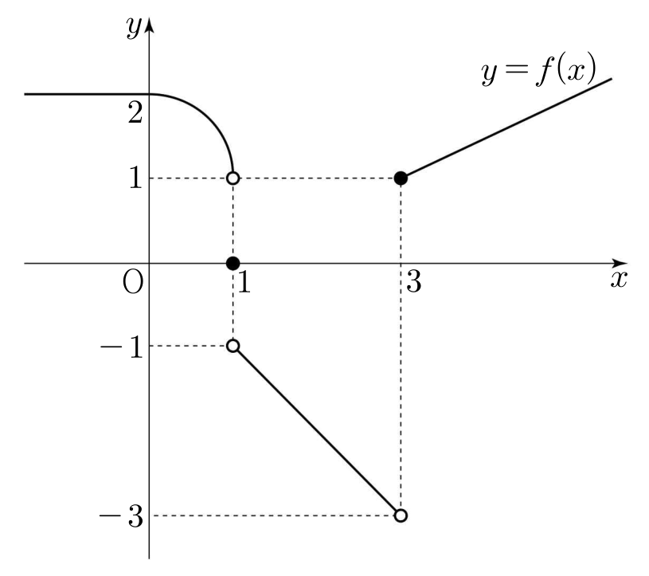
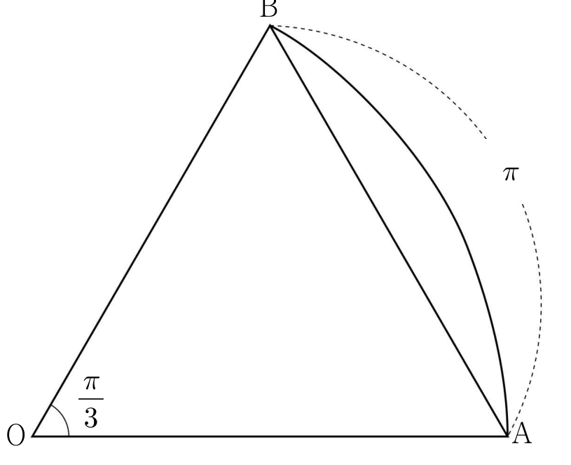
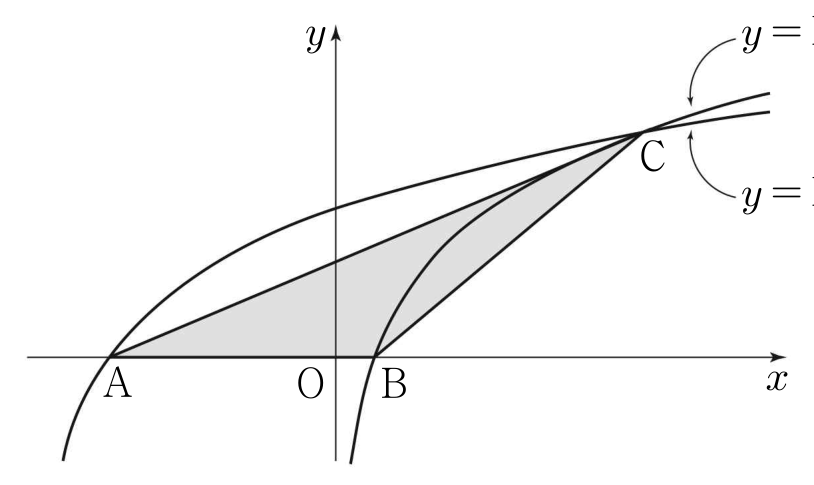
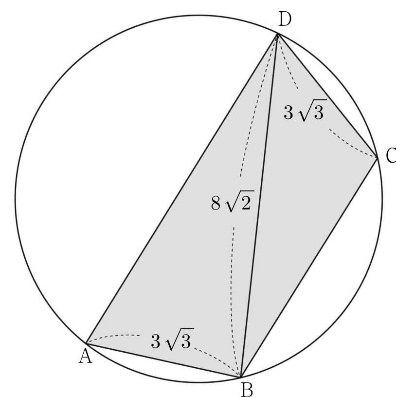

원본 (내부용)다항함수 \(f(x)\)에 대하여 \(\displaystyle\lim_{h\to0}\frac{f(4+h)-f(4)}{3h}=7\)일 때, \(f'(4)\)의 값은? [2점]
① 21② 22③ 23④ 24⑤ 25
원본 정답 ①
원본 풀이 (내부용)[출제의도] 미분계수 이해하기
\(
\begin{aligned}
\lim_{h\to0}\frac{f(4+h)-f(4)}{3h}
&=\frac13\times\lim_{h\to0}\frac{f(4+h)-f(4)}{h}\\
&=\frac13 f'(4)=7
\end{aligned}
\)
따라서 \(f'(4)=3\times7=21\)
생성기 숫자판 1/6 · G2M2-01#5다항함수 $f\left(x\right)$에 대하여 $\lim_{h\to 0}\frac{f\left(1+h\right)-f\left(1\right)}{4h}=6$일 때, $f'\left(1\right)$의 값으로 옳은 것을 고르세요.
① $6$② $20$③ $22$④ $23$⑤ $24$
정답⑤ $24$ $\lim_{h\to 0}\frac{f\left(1+h\right)-f\left(1\right)}{4h}=\frac{1}{4}\lim_{h\to 0}\frac{f\left(1+h\right)-f\left(1\right)}{h}$ $=\frac{1}{4}f'\left(1\right)=6$ 따라서 $f'\left(1\right)=24$
숫자: 원본 0 4 4 3 7 4 → 쌍둥이 0 1 1 4 6 1 · 같은 수: 0 4
생성기 숫자판 2/6 · G2M2-01#5다항함수 $f\left(x\right)$에 대하여 $\lim_{h\to 0}\frac{f\left(2+h\right)-f\left(2\right)}{4h}=9$일 때, $f'\left(2\right)$의 값으로 옳은 것을 고르세요.
① $9$② $32$③ $36$④ $37$⑤ $40$
정답③ $36$ $\lim_{h\to 0}\frac{f\left(2+h\right)-f\left(2\right)}{4h}=\frac{1}{4}\lim_{h\to 0}\frac{f\left(2+h\right)-f\left(2\right)}{h}$ $=\frac{1}{4}f'\left(2\right)=9$ 따라서 $f'\left(2\right)=36$
숫자: 원본 0 4 4 3 7 4 → 쌍둥이 0 2 2 4 9 2 · 같은 수: 0 4
생성기 숫자판 3/6 · G2M2-01#5다항함수 $f\left(x\right)$에 대하여 $\lim_{h\to 0}\frac{f\left(3+h\right)-f\left(3\right)}{2h}=4$일 때, $f'\left(3\right)$의 값으로 옳은 것을 고르세요.
① $4$② $6$③ $7$④ $8$⑤ $10$
정답④ $8$ $\lim_{h\to 0}\frac{f\left(3+h\right)-f\left(3\right)}{2h}=\frac{1}{2}\lim_{h\to 0}\frac{f\left(3+h\right)-f\left(3\right)}{h}$ $=\frac{1}{2}f'\left(3\right)=4$ 따라서 $f'\left(3\right)=8$
생성기 숫자판 4/6 · G2M2-01#5다항함수 $f\left(x\right)$에 대하여 $\lim_{h\to 0}\frac{f\left(4+h\right)-f\left(4\right)}{3h}=4$일 때, $f'\left(4\right)$의 값으로 옳은 것을 고르세요.
① $12$② $13$③ $14$④ $15$⑤ $24$
정답① $12$ $\lim_{h\to 0}\frac{f\left(4+h\right)-f\left(4\right)}{3h}=\frac{1}{3}\lim_{h\to 0}\frac{f\left(4+h\right)-f\left(4\right)}{h}$ $=\frac{1}{3}f'\left(4\right)=4$ 따라서 $f'\left(4\right)=12$
생성기 숫자판 5/6 · G2M2-01#5다항함수 $f\left(x\right)$에 대하여 $\lim_{h\to 0}\frac{f\left(1+h\right)-f\left(1\right)}{3h}=4$일 때, $f'\left(1\right)$의 값으로 옳은 것을 고르세요.
① $12$② $13$③ $14$④ $15$⑤ $24$
정답① $12$ $\lim_{h\to 0}\frac{f\left(1+h\right)-f\left(1\right)}{3h}=\frac{1}{3}\lim_{h\to 0}\frac{f\left(1+h\right)-f\left(1\right)}{h}$ $=\frac{1}{3}f'\left(1\right)=4$ 따라서 $f'\left(1\right)=12$
생성기 숫자판 6/6 · G2M2-01#5다항함수 $f\left(x\right)$에 대하여 $\lim_{h\to 0}\frac{f\left(4+h\right)-f\left(4\right)}{4h}=6$일 때, $f'\left(4\right)$의 값으로 옳은 것을 고르세요.
① $6$② $20$③ $24$④ $25$⑤ $28$
정답③ $24$ $\lim_{h\to 0}\frac{f\left(4+h\right)-f\left(4\right)}{4h}=\frac{1}{4}\lim_{h\to 0}\frac{f\left(4+h\right)-f\left(4\right)}{h}$ $=\frac{1}{4}f'\left(4\right)=6$ 따라서 $f'\left(4\right)=24$
숫자: 원본 0 4 4 3 7 4 → 쌍둥이 0 4 4 4 6 4 · 같은 수: 0 4
4. 2019년 11월 가형 4번 · 3점 · 수학Ⅱ 미분 · G2f-15#1
원본 (내부용)함수 \(y=f(x)\)의 그래프가 그림과 같다. 도형에는 \(x=1\)에서 \((1,1)\), \((1,-1)\)의 열린 점과 \((1,0)\)의 채운 점이 있다. 아래 선분은 \((1,-1)\)에서 \((3,-3)\)의 열린 점으로 이어지고, \((3,1)\)에는 채운 점이 있다. 위쪽 곡선은 \(y=2\)에서 시작해 \((1,1)\)의 열린 점에 이른다. \((3,1)\)에서 오른쪽으로 증가하는 선이 이어진다. 점선은 \(x=1,3\), \(y=1,-3\)을 표시한다. \(f(3)+\displaystyle\lim_{x\to1^-}f(x)\)의 값은? [3점]

① \(-2\)② \(-1\)③ 0④ 1⑤ 2
원본 정답 ⑤
원본 풀이 (내부용)[출제의도] 함수의 극한 이해하기
\(
f(3)+\lim_{x\to1-}f(x)=1+1=2
\)
생성기 숫자판 1/6 · G2f-15#1함수 $y=f\left(x\right)$의 그래프가 그림과 같습니다. $f\left(2\right)+\lim_{x\to 3^{-}}f\left(x\right)$의 값으로 옳은 것을 고르세요.
① $-4$② $-3$③ $-2$④ $-1$⑤ $0$
정답③ $-2$ $f\left(2\right)=0$ $x\to 3^{-}$일 때 $f\left(x\right)\to -2$ 따라서 구하는 값은 $0-2=-2$
원본 (내부용)좌표평면 위의 점 \(P\)에 대하여 동경 \(OP\)가 나타내는 각의 크기 중 하나를 \(\theta\left(\frac{\pi}{2}<\theta<\pi\right)\)라 하자. 각의 크기 \(6\theta\)를 나타내는 동경이 동경 \(OP\)와 일치할 때, \(\theta\)의 값은? (단, \(O\)는 원점이고, \(x\)축의 양의 방향을 시초선으로 한다.) [3점]
① \(\frac35\pi\)② \(\frac23\pi\)③ \(\frac{11}{15}\pi\)④ \(\frac45\pi\)⑤ \(\frac{13}{15}\pi\)
원본 정답 ④
원본 풀이 (내부용)[출제의도] 일반각과 호도법 이해하기
각 \(\theta\)를 나타내는 동경과 각 \(6\theta\)를 나타내는 동경이 일치하므로
\(
6\theta-\theta=2n\pi\quad(n\text{은 정수}),\qquad
\theta=\frac{2n}{5}\pi
\)
\(
\frac{\pi}{2}<\theta<\pi
\)
이므로 \(n=2\)일 때, \(\theta=\frac45\pi\)
생성기 숫자판 1/5 · G2M1-02b#15좌표평면 위의 점 $\mathrm{P}$에 대하여 동경 $\mathrm{OP}$가 나타내는 각의 크기 중 하나를 $\theta\ \left(0<\theta<\frac{\pi}{2}\right)$라 합시다. 각의 크기 $6\theta$를 나타내는 동경이 동경 $\mathrm{OP}$와 일치할 때, $\theta$의 값으로 옳은 것을 고르세요. (단, $\mathrm{O}$는 원점이고, $x$축의 양의 방향을 시초선으로 합니다.)
① $\frac{\pi}{5}$② $\frac{4}{15}\pi$③ $\frac{\pi}{3}$④ $\frac{2}{5}\pi$⑤ $\frac{7}{15}\pi$
정답④ $\frac{2}{5}\pi$ 두 동경이 일치하므로 $6\theta-\theta=2n\pi$ ($n$은 정수), $\theta=\frac{2n\pi}{5}$ $0<\frac{2n\pi}{5}<\frac{\pi}{2}$를 만족시키는 정수 $n$은 $1$ 따라서 $\theta=\frac{2}{5}\pi$
숫자: 원본 2 6 → 쌍둥이 0 2 6 · 같은 수: 2 6
생성기 숫자판 2/5 · G2M1-02b#15좌표평면 위의 점 $\mathrm{P}$에 대하여 동경 $\mathrm{OP}$가 나타내는 각의 크기 중 하나를 $\theta\ \left(\pi<\theta<\frac{3}{2}\pi\right)$라 합시다. 각의 크기 $9\theta$를 나타내는 동경이 동경 $\mathrm{OP}$와 일치할 때, $\theta$의 값으로 옳은 것을 고르세요. (단, $\mathrm{O}$는 원점이고, $x$축의 양의 방향을 시초선으로 합니다.)
① $\frac{7}{6}\pi$② $\frac{29}{24}\pi$③ $\frac{5}{4}\pi$④ $\frac{31}{24}\pi$⑤ $\frac{4}{3}\pi$
정답③ $\frac{5}{4}\pi$ 두 동경이 일치하므로 $9\theta-\theta=2n\pi$ ($n$은 정수), $\theta=\frac{2n\pi}{8}$ $\pi<\frac{2n\pi}{8}<\frac{3}{2}\pi$를 만족시키는 정수 $n$은 $5$ 따라서 $\theta=\frac{5}{4}\pi$
숫자: 원본 2 6 → 쌍둥이 3 2 9 · 같은 수: 2
생성기 숫자판 3/5 · G2M1-02b#15좌표평면 위의 점 $\mathrm{P}$에 대하여 동경 $\mathrm{OP}$가 나타내는 각의 크기 중 하나를 $\theta\ \left(0<\theta<\frac{\pi}{2}\right)$라 합시다. 각의 크기 $9\theta$를 나타내는 동경이 동경 $\mathrm{OP}$와 일치할 때, $\theta$의 값으로 옳은 것을 고르세요. (단, $\mathrm{O}$는 원점이고, $x$축의 양의 방향을 시초선으로 합니다.)
① $\frac{\pi}{6}$② $\frac{5}{24}\pi$③ $\frac{\pi}{4}$④ $\frac{7}{24}\pi$⑤ $\frac{\pi}{3}$
정답③ $\frac{\pi}{4}$ 두 동경이 일치하므로 $9\theta-\theta=2n\pi$ ($n$은 정수), $\theta=\frac{2n\pi}{8}$ $0<\frac{2n\pi}{8}<\frac{\pi}{2}$를 만족시키는 정수 $n$은 $1$ 따라서 $\theta=\frac{\pi}{4}$
숫자: 원본 2 6 → 쌍둥이 0 2 9 · 같은 수: 2
생성기 숫자판 4/5 · G2M1-02b#15좌표평면 위의 점 $\mathrm{P}$에 대하여 동경 $\mathrm{OP}$가 나타내는 각의 크기 중 하나를 $\theta\ \left(\pi<\theta<\frac{3}{2}\pi\right)$라 합시다. 각의 크기 $6\theta$를 나타내는 동경이 동경 $\mathrm{OP}$와 일치할 때, $\theta$의 값으로 옳은 것을 고르세요. (단, $\mathrm{O}$는 원점이고, $x$축의 양의 방향을 시초선으로 합니다.)
① $\frac{16}{15}\pi$② $\frac{17}{15}\pi$③ $\frac{6}{5}\pi$④ $\frac{19}{15}\pi$⑤ $\frac{4}{3}\pi$
정답③ $\frac{6}{5}\pi$ 두 동경이 일치하므로 $6\theta-\theta=2n\pi$ ($n$은 정수), $\theta=\frac{2n\pi}{5}$ $\pi<\frac{2n\pi}{5}<\frac{3}{2}\pi$를 만족시키는 정수 $n$은 $3$ 따라서 $\theta=\frac{6}{5}\pi$
숫자: 원본 2 6 → 쌍둥이 3 2 6 · 같은 수: 2 6
생성기 숫자판 5/5 · G2M1-02b#15좌표평면 위의 점 $\mathrm{P}$에 대하여 동경 $\mathrm{OP}$가 나타내는 각의 크기 중 하나를 $\theta\ \left(\frac{3}{2}\pi<\theta<2\pi\right)$라 합시다. 각의 크기 $8\theta$를 나타내는 동경이 동경 $\mathrm{OP}$와 일치할 때, $\theta$의 값으로 옳은 것을 고르세요. (단, $\mathrm{O}$는 원점이고, $x$축의 양의 방향을 시초선으로 합니다.)
① $\frac{34}{21}\pi$② $\frac{5}{3}\pi$③ $\frac{12}{7}\pi$④ $\frac{37}{21}\pi$⑤ $\frac{38}{21}\pi$
정답③ $\frac{12}{7}\pi$ 두 동경이 일치하므로 $8\theta-\theta=2n\pi$ ($n$은 정수), $\theta=\frac{2n\pi}{7}$ $\frac{3}{2}\pi<\frac{2n\pi}{7}<2\pi$를 만족시키는 정수 $n$은 $6$ 따라서 $\theta=\frac{12}{7}\pi$
원본 (내부용)그림과 같이 중심각의 크기가 \(\frac{\pi}{3}\)인 부채꼴 \(OAB\)의 호의 길이가 \(\pi\)일 때, 삼각형 \(OAB\)의 넓이는? [3점] 도형 설명: \(O\)를 중심으로 한 부채꼴의 반지름은 \(OA\), \(OB\)이고, \(\angle AOB=\frac{\pi}{3}\)이다. 호 \(AB\)의 길이가 \(\pi\)로 표시되어 있다.

① \(2\sqrt3\)② \(\frac{9\sqrt3}{4}\)③ \(\frac{5\sqrt3}{2}\)④ \(\frac{11\sqrt3}{4}\)⑤ \(3\sqrt3\)
원본 정답 ②
원본 풀이 (내부용)[출제의도] 삼각함수를 활용하여 문제해결하기
부채꼴 \(OAB\)의 반지름의 길이를 \(r\)라 하면
\(
\pi=r\times\frac{\pi}{3}\text{에서 }r=3
\)
따라서 삼각형 \(OAB\)의 넓이는
\(
\frac12\times3^2\times\sin\frac{\pi}{3}
=\frac{9\sqrt3}{4}
\)
생성기 숫자판 1/6 · G2M10-02#8중심각의 크기가 $\frac{\pi}{4}$인 부채꼴 $\mathrm{OAB}$의 호의 길이가 $\frac{3\pi}{4}$일 때, 삼각형 $\mathrm{OAB}$의 넓이로 옳은 것을 고르세요.
① $\frac{7\sqrt{2}}{4}$② $2\sqrt{2}$③ $\frac{9\sqrt{2}}{4}$④ $\frac{5\sqrt{2}}{2}$⑤ $\frac{11\sqrt{2}}{4}$
정답③ $\frac{9\sqrt{2}}{4}$ 부채꼴의 반지름의 길이를 $r$라 하면 $r\times \frac{\pi}{4}=\frac{3\pi}{4}$이므로 $r=3$ 삼각형 $\mathrm{OAB}$의 넓이는 $\frac{1}{2}\times 3\times 3\times\sin \frac{\pi}{4}=\frac{1}{2}\times 9\times \frac{\sqrt{2}}{2}=\frac{9\sqrt{2}}{4}$
숫자: 원본 3 3 → 쌍둥이 4 3 4 · 같은 수: 3
생성기 숫자판 2/6 · G2M10-02#8중심각의 크기가 $\frac{2\pi}{3}$인 부채꼴 $\mathrm{OAB}$의 호의 길이가 $4\pi$일 때, 삼각형 $\mathrm{OAB}$의 넓이로 옳은 것을 고르세요.
① $\frac{17\sqrt{3}}{2}$② $\frac{35\sqrt{3}}{4}$③ $9\sqrt{3}$④ $\frac{37\sqrt{3}}{4}$⑤ $\frac{19\sqrt{3}}{2}$
정답③ $9\sqrt{3}$ 부채꼴의 반지름의 길이를 $r$라 하면 $r\times \frac{2\pi}{3}=4\pi$이므로 $r=6$ 삼각형 $\mathrm{OAB}$의 넓이는 $\frac{1}{2}\times 6\times 6\times\sin \frac{2\pi}{3}=\frac{1}{2}\times 36\times \frac{\sqrt{3}}{2}=9\sqrt{3}$
숫자: 원본 3 3 → 쌍둥이 2 3 4 · 같은 수: 3
생성기 숫자판 3/6 · G2M10-02#8중심각의 크기가 $\frac{\pi}{4}$인 부채꼴 $\mathrm{OAB}$의 호의 길이가 $\pi$일 때, 삼각형 $\mathrm{OAB}$의 넓이로 옳은 것을 고르세요.
① $\frac{7\sqrt{2}}{2}$② $\frac{15\sqrt{2}}{4}$③ $4\sqrt{2}$④ $\frac{17\sqrt{2}}{4}$⑤ $\frac{9\sqrt{2}}{2}$
정답③ $4\sqrt{2}$ 부채꼴의 반지름의 길이를 $r$라 하면 $r\times \frac{\pi}{4}=\pi$이므로 $r=4$ 삼각형 $\mathrm{OAB}$의 넓이는 $\frac{1}{2}\times 4\times 4\times\sin \frac{\pi}{4}=\frac{1}{2}\times 16\times \frac{\sqrt{2}}{2}=4\sqrt{2}$
숫자: 원본 3 3 → 쌍둥이 4
생성기 숫자판 4/6 · G2M10-02#8중심각의 크기가 $\frac{\pi}{4}$인 부채꼴 $\mathrm{OAB}$의 호의 길이가 $\frac{3\pi}{2}$일 때, 삼각형 $\mathrm{OAB}$의 넓이로 옳은 것을 고르세요.
① $\frac{17\sqrt{2}}{2}$② $\frac{35\sqrt{2}}{4}$③ $9\sqrt{2}$④ $\frac{37\sqrt{2}}{4}$⑤ $\frac{19\sqrt{2}}{2}$
정답③ $9\sqrt{2}$ 부채꼴의 반지름의 길이를 $r$라 하면 $r\times \frac{\pi}{4}=\frac{3\pi}{2}$이므로 $r=6$ 삼각형 $\mathrm{OAB}$의 넓이는 $\frac{1}{2}\times 6\times 6\times\sin \frac{\pi}{4}=\frac{1}{2}\times 36\times \frac{\sqrt{2}}{2}=9\sqrt{2}$
숫자: 원본 3 3 → 쌍둥이 4 3 2 · 같은 수: 3
생성기 숫자판 5/6 · G2M10-02#8중심각의 크기가 $\frac{\pi}{4}$인 부채꼴 $\mathrm{OAB}$의 호의 길이가 $\frac{5\pi}{4}$일 때, 삼각형 $\mathrm{OAB}$의 넓이로 옳은 것을 고르세요.
① $\frac{23\sqrt{2}}{4}$② $6\sqrt{2}$③ $\frac{25\sqrt{2}}{4}$④ $\frac{13\sqrt{2}}{2}$⑤ $\frac{27\sqrt{2}}{4}$
정답③ $\frac{25\sqrt{2}}{4}$ 부채꼴의 반지름의 길이를 $r$라 하면 $r\times \frac{\pi}{4}=\frac{5\pi}{4}$이므로 $r=5$ 삼각형 $\mathrm{OAB}$의 넓이는 $\frac{1}{2}\times 5\times 5\times\sin \frac{\pi}{4}=\frac{1}{2}\times 25\times \frac{\sqrt{2}}{2}=\frac{25\sqrt{2}}{4}$
숫자: 원본 3 3 → 쌍둥이 4 5 4
생성기 숫자판 6/6 · G2M10-02#8중심각의 크기가 $\frac{\pi}{3}$인 부채꼴 $\mathrm{OAB}$의 호의 길이가 $2\pi$일 때, 삼각형 $\mathrm{OAB}$의 넓이로 옳은 것을 고르세요.
① $\frac{17\sqrt{3}}{2}$② $\frac{35\sqrt{3}}{4}$③ $9\sqrt{3}$④ $\frac{37\sqrt{3}}{4}$⑤ $\frac{19\sqrt{3}}{2}$
정답③ $9\sqrt{3}$ 부채꼴의 반지름의 길이를 $r$라 하면 $r\times \frac{\pi}{3}=2\pi$이므로 $r=6$ 삼각형 $\mathrm{OAB}$의 넓이는 $\frac{1}{2}\times 6\times 6\times\sin \frac{\pi}{3}=\frac{1}{2}\times 36\times \frac{\sqrt{3}}{2}=9\sqrt{3}$
원본 (내부용)두 함수 \(f(x)=3^x,\ g(x)=3^{2-x}+a\)의 그래프가 만나는 점의 \(x\)좌표가 2일 때, 닫힌구간 \([1,3]\)에서 함수 \(f(x)g(x)\)의 최솟값은? (단, \(a\)는 상수이다.) [3점]
① 31② 32③ 33④ 34⑤ 35
원본 정답 ③
원본 풀이 (내부용)[출제의도] 지수함수의 그래프 이해하기
두 함수 \(f(x)=3^x,\;g(x)=3^{2-x}+a\)의 그래프가 만나는 점의 \(x\)좌표가 \(2\)이므로
\(
3^2=3^{2-2}+a,\qquad a=8
\)
따라서 함수 \(f(x)g(x)=8\times3^x+9\)는 단조감소 구간 \([1,3]\)에서 최댓값 33을 갖는다.
생성기 숫자판 1/6 · G2M1-04b#2두 함수 $f\left(x\right)=3^{x}$, $g\left(x\right)=3^{3-x}+a$의 그래프가 만나는 점의 $x$좌표가 $3$일 때, 닫힌구간 $\left[ 1,\ 3\right]$에서 함수 $f\left(x\right)g\left(x\right)$의 최솟값으로 옳은 것을 고르세요. (단, $a$는 상수입니다.)
① $103$② $104$③ $105$④ $106$⑤ $107$
정답③ $105$ $f\left(3\right)=g\left(3\right)$에서 $3^{3}=3^{0}+a$, $a=26$ $f\left(x\right)g\left(x\right)=3^{x}\left(3^{3-x}+26\right)=27+26\times 3^{x}$ 이 함수는 증가하므로 $x=1$일 때 최솟값 $27+26\times 3=105$
숫자: 원본 3 3 2 1 3 → 쌍둥이 3 3 3 1 3 · 같은 수: 1 3
생성기 숫자판 2/6 · G2M1-04b#2두 함수 $f\left(x\right)=2^{x}$, $g\left(x\right)=2^{2-x}+a$의 그래프가 만나는 점의 $x$좌표가 $2$일 때, 닫힌구간 $\left[ 2,\ 4\right]$에서 함수 $f\left(x\right)g\left(x\right)$의 최솟값으로 옳은 것을 고르세요. (단, $a$는 상수입니다.)
① $16$② $17$③ $18$④ $19$⑤ $20$
정답① $16$ $f\left(2\right)=g\left(2\right)$에서 $2^{2}=2^{0}+a$, $a=3$ $f\left(x\right)g\left(x\right)=2^{x}\left(2^{2-x}+3\right)=4+3\times 2^{x}$ 이 함수는 증가하므로 $x=2$일 때 최솟값 $4+3\times 4=16$
숫자: 원본 3 3 2 1 3 → 쌍둥이 2 2 2 2 4 · 같은 수: 2
생성기 숫자판 3/6 · G2M1-04b#2두 함수 $f\left(x\right)=3^{x}$, $g\left(x\right)=3^{1-x}+a$의 그래프가 만나는 점의 $x$좌표가 $1$일 때, 닫힌구간 $\left[ 2,\ 4\right]$에서 함수 $f\left(x\right)g\left(x\right)$의 최솟값으로 옳은 것을 고르세요. (단, $a$는 상수입니다.)
① $18$② $19$③ $20$④ $21$⑤ $22$
정답④ $21$ $f\left(1\right)=g\left(1\right)$에서 $3^{1}=3^{0}+a$, $a=2$ $f\left(x\right)g\left(x\right)=3^{x}\left(3^{1-x}+2\right)=3+2\times 3^{x}$ 이 함수는 증가하므로 $x=2$일 때 최솟값 $3+2\times 9=21$
숫자: 원본 3 3 2 1 3 → 쌍둥이 3 3 1 2 4 · 같은 수: 1 2 3
생성기 숫자판 4/6 · G2M1-04b#2두 함수 $f\left(x\right)=2^{x}$, $g\left(x\right)=2^{3-x}+a$의 그래프가 만나는 점의 $x$좌표가 $3$일 때, 닫힌구간 $\left[ 2,\ 4\right]$에서 함수 $f\left(x\right)g\left(x\right)$의 최솟값으로 옳은 것을 고르세요. (단, $a$는 상수입니다.)
① $33$② $34$③ $35$④ $36$⑤ $37$
정답④ $36$ $f\left(3\right)=g\left(3\right)$에서 $2^{3}=2^{0}+a$, $a=7$ $f\left(x\right)g\left(x\right)=2^{x}\left(2^{3-x}+7\right)=8+7\times 2^{x}$ 이 함수는 증가하므로 $x=2$일 때 최솟값 $8+7\times 4=36$
숫자: 원본 3 3 2 1 3 → 쌍둥이 2 2 3 2 4 · 같은 수: 2 3
생성기 숫자판 5/6 · G2M1-04b#2두 함수 $f\left(x\right)=2^{x}$, $g\left(x\right)=2^{3-x}+a$의 그래프가 만나는 점의 $x$좌표가 $2$일 때, 닫힌구간 $\left[ 2,\ 4\right]$에서 함수 $f\left(x\right)g\left(x\right)$의 최솟값으로 옳은 것을 고르세요. (단, $a$는 상수입니다.)
① $13$② $14$③ $15$④ $16$⑤ $17$
정답④ $16$ $f\left(2\right)=g\left(2\right)$에서 $2^{2}=2^{1}+a$, $a=2$ $f\left(x\right)g\left(x\right)=2^{x}\left(2^{3-x}+2\right)=8+2\times 2^{x}$ 이 함수는 증가하므로 $x=2$일 때 최솟값 $8+2\times 4=16$
숫자: 원본 3 3 2 1 3 → 쌍둥이 2 2 2 2 4 · 같은 수: 2
생성기 숫자판 6/6 · G2M1-04b#2두 함수 $f\left(x\right)=2^{x}$, $g\left(x\right)=2^{3-x}+a$의 그래프가 만나는 점의 $x$좌표가 $3$일 때, 닫힌구간 $\left[ 1,\ 3\right]$에서 함수 $f\left(x\right)g\left(x\right)$의 최솟값으로 옳은 것을 고르세요. (단, $a$는 상수입니다.)
① $21$② $22$③ $23$④ $24$⑤ $25$
정답② $22$ $f\left(3\right)=g\left(3\right)$에서 $2^{3}=2^{0}+a$, $a=7$ $f\left(x\right)g\left(x\right)=2^{x}\left(2^{3-x}+7\right)=8+7\times 2^{x}$ 이 함수는 증가하므로 $x=1$일 때 최솟값 $8+7\times 2=22$
숫자: 원본 3 3 2 1 3 → 쌍둥이 2 2 3 1 3 · 같은 수: 1 2 3
12. 2019년 11월 가형 12번 · 3점 · 수학Ⅱ 함수의 극한·연속 · G2M6-01#3
원본 (내부용)실수 전체의 집합에서 연속인 함수 \(f(x)\)가 모든 실수 \(x\)에 대하여 \( (x-1)f(x)=x^3+ax+b \) 를 만족시킨다. \(f(1)=4\)일 때, \(a\times b\)의 값은? (단, \(a,b\)는 상수이다.) [3점]
① \(-2\)② \(-1\)③ 0④ 1⑤ 2
원본 정답 ①
원본 풀이 (내부용)[출제의도] 함수의 연속 이해하기
\(
f(x)=
\begin{cases}
\dfrac{x^3+ax+b}{x-1} & (x\ne1)\\
4 & (x=1)
\end{cases}
\quad\text{이고}
\)
함수 \(f(x)\)는 실수 전체의 집합에서 연속이므로 \(x=1\)에서 연속이다.
\(
\lim_{x\to1}\frac{x^3+ax+b}{x-1}=4\text{에서 }\lim_{x\to1}(x-1)=0\text{이므로}
\)
\(
\lim_{x\to1}(x^3+ax+b)=1+a+b=0,\qquad b=-a-1
\)
\(
\begin{aligned}
\lim_{x\to1}\frac{x^3+ax-a-1}{x-1}
&=\lim_{x\to1}\frac{(x-1)(x^2+x+a+1)}{x-1}\\
&=\lim_{x\to1}(x^2+x+a+1)\\
&=3+a=4
\end{aligned}
\)
따라서 \(a=1,\;b=-2\)이므로 \(a\times b=-2\)
생성기 숫자판 1/6 · G2M6-01#3실수 전체의 집합에서 연속인 함수 $f\left(x\right)$가 모든 실수 $x$에 대하여 $\left(x+3\right)f\left(x\right)=x^{3}+ax+b$를 만족시킵니다. $f\left(-3\right)=1$일 때, $a+b$의 값으로 옳은 것을 고르세요. (단, $a$, $b$는 상수입니다.)
생성기 숫자판 2/6 · G2M6-01#3실수 전체의 집합에서 연속인 함수 $f\left(x\right)$가 모든 실수 $x$에 대하여 $\left(x-1\right)f\left(x\right)=x^{3}+ax+b$를 만족시킵니다. $f\left(1\right)=-11$일 때, $a+b$의 값으로 옳은 것을 고르세요. (단, $a$, $b$는 상수입니다.)
생성기 숫자판 3/6 · G2M6-01#3실수 전체의 집합에서 연속인 함수 $f\left(x\right)$가 모든 실수 $x$에 대하여 $\left(x-1\right)f\left(x\right)=x^{3}+ax+b$를 만족시킵니다. $f\left(1\right)=16$일 때, $a+b$의 값으로 옳은 것을 고르세요. (단, $a$, $b$는 상수입니다.)
생성기 숫자판 4/6 · G2M6-01#3실수 전체의 집합에서 연속인 함수 $f\left(x\right)$가 모든 실수 $x$에 대하여 $\left(x-4\right)f\left(x\right)=x^{3}+ax+b$를 만족시킵니다. $f\left(4\right)=10$일 때, $a+b$의 값으로 옳은 것을 고르세요. (단, $a$, $b$는 상수입니다.)
생성기 숫자판 5/6 · G2M6-01#3실수 전체의 집합에서 연속인 함수 $f\left(x\right)$가 모든 실수 $x$에 대하여 $\left(x-4\right)f\left(x\right)=x^{3}+ax+b$를 만족시킵니다. $f\left(4\right)=14$일 때, $a+b$의 값으로 옳은 것을 고르세요. (단, $a$, $b$는 상수입니다.)
생성기 숫자판 6/6 · G2M6-01#3실수 전체의 집합에서 연속인 함수 $f\left(x\right)$가 모든 실수 $x$에 대하여 $\left(x-4\right)f\left(x\right)=x^{3}+ax+b$를 만족시킵니다. $f\left(4\right)=0$일 때, $a+b$의 값으로 옳은 것을 고르세요. (단, $a$, $b$는 상수입니다.)
원본 (내부용)그림과 같이 두 곡선 \(y=\log_2(x+4),\ y=\log_2 x+1\)이 \(x\)축과 만나는 점을 각각 \(A,B\)라 하고 두 곡선이 만나는 점을 \(C\)라 할 때, 삼각형 \(ABC\)의 넓이는? [3점] 도형 설명: 좌표축 위에 두 로그함수의 그래프가 그려져 있다. \(A\)와 \(B\)는 각각 두 곡선의 \(x\)축과의 교점이고, \(C\)는 두 곡선의 교점이다. 삼각형 \(ABC\)가 음영으로 표시되어 있다.

① 5② \(\frac{21}{4}\)③ \(\frac{11}{2}\)④ \(\frac{23}{4}\)⑤ 6
원본 정답 ②
원본 풀이 (내부용)[출제의도] 로그함수의 그래프를 활용하여 문제해결하기
\(
\log_2(x+4)=0\text{에서 }x=-3\text{이므로 }A(-3,0)
\)
\(
\log_2x+1=0\text{에서 }x=\frac12\text{이므로 }B\left(\frac12,0\right)
\)
\(
\log_2(x+4)=\log_2x+1\text{에서 }x=4\text{이므로 }C(4,3)
\)
따라서 삼각형 \(ABC\)의 넓이는
\(
\frac12\times\frac72\times3=\frac{21}{4}
\)
생성기 숫자판 1/6 · G2M10-04#1두 곡선 $y=\log_{3}\left(x+6\right)$, $y=\log_{3}x+1$이 $x$축과 만나는 점을 각각 $\mathrm{A}$, $\mathrm{B}$라 하고 두 곡선이 만나는 점을 $\mathrm{C}$라 할 때, 삼각형 $\mathrm{ABC}$의 넓이로 옳은 것을 고르세요.
① $\frac{29}{6}$② $\frac{61}{12}$③ $\frac{16}{3}$④ $\frac{67}{12}$⑤ $\frac{35}{6}$
정답③ $\frac{16}{3}$ $\log_{3}\left(x+6\right)=0$에서 $x=-5$이므로 $\mathrm{A}\left(-5,\ 0\right)$ $\log_{3}x+1=0$에서 $x=\frac{1}{3}$이므로 $\mathrm{B}\left(\frac{1}{3},\ 0\right)$ $\log_{3}\left(x+6\right)=\log_{3}3x$에서 $x+6=3x$, $x=3$이므로 $\mathrm{C}\left(3,\ 2\right)$ 따라서 삼각형 $\mathrm{ABC}$의 넓이는 $\frac{1}{2}\times \frac{16}{3}\times 2=\frac{16}{3}$
숫자: 원본 2 4 2 1 → 쌍둥이 3 6 3 1 · 같은 수: 1
생성기 숫자판 2/6 · G2M10-04#1두 곡선 $y=\log_{2}\left(x+2\right)$, $y=\log_{2}x+1$이 $x$축과 만나는 점을 각각 $\mathrm{A}$, $\mathrm{B}$라 하고 두 곡선이 만나는 점을 $\mathrm{C}$라 할 때, 삼각형 $\mathrm{ABC}$의 넓이로 옳은 것을 고르세요.
① $\frac{3}{4}$② $1$③ $\frac{5}{4}$④ $\frac{3}{2}$⑤ $\frac{7}{4}$
정답④ $\frac{3}{2}$ $\log_{2}\left(x+2\right)=0$에서 $x=-1$이므로 $\mathrm{A}\left(-1,\ 0\right)$ $\log_{2}x+1=0$에서 $x=\frac{1}{2}$이므로 $\mathrm{B}\left(\frac{1}{2},\ 0\right)$ $\log_{2}\left(x+2\right)=\log_{2}2x$에서 $x+2=2x$, $x=2$이므로 $\mathrm{C}\left(2,\ 2\right)$ 따라서 삼각형 $\mathrm{ABC}$의 넓이는 $\frac{1}{2}\times \frac{3}{2}\times 2=\frac{3}{2}$
숫자: 원본 2 4 2 1 → 쌍둥이 2 2 2 1 · 같은 수: 1 2
생성기 숫자판 3/6 · G2M10-04#1두 곡선 $y=\log_{3}\left(x+18\right)$, $y=\log_{3}x+1$이 $x$축과 만나는 점을 각각 $\mathrm{A}$, $\mathrm{B}$라 하고 두 곡선이 만나는 점을 $\mathrm{C}$라 할 때, 삼각형 $\mathrm{ABC}$의 넓이로 옳은 것을 고르세요.
① $\frac{101}{4}$② $\frac{51}{2}$③ $\frac{103}{4}$④ $26$⑤ $\frac{105}{4}$
정답④ $26$ $\log_{3}\left(x+18\right)=0$에서 $x=-17$이므로 $\mathrm{A}\left(-17,\ 0\right)$ $\log_{3}x+1=0$에서 $x=\frac{1}{3}$이므로 $\mathrm{B}\left(\frac{1}{3},\ 0\right)$ $\log_{3}\left(x+18\right)=\log_{3}3x$에서 $x+18=3x$, $x=9$이므로 $\mathrm{C}\left(9,\ 3\right)$ 따라서 삼각형 $\mathrm{ABC}$의 넓이는 $\frac{1}{2}\times \frac{52}{3}\times 3=26$
숫자: 원본 2 4 2 1 → 쌍둥이 3 18 3 1 · 같은 수: 1
생성기 숫자판 4/6 · G2M10-04#1두 곡선 $y=\log_{3}\left(x+2\right)$, $y=\log_{3}x+1$이 $x$축과 만나는 점을 각각 $\mathrm{A}$, $\mathrm{B}$라 하고 두 곡선이 만나는 점을 $\mathrm{C}$라 할 때, 삼각형 $\mathrm{ABC}$의 넓이로 옳은 것을 고르세요.
① $\frac{1}{6}$② $\frac{5}{12}$③ $\frac{2}{3}$④ $\frac{11}{12}$⑤ $\frac{7}{6}$
정답③ $\frac{2}{3}$ $\log_{3}\left(x+2\right)=0$에서 $x=-1$이므로 $\mathrm{A}\left(-1,\ 0\right)$ $\log_{3}x+1=0$에서 $x=\frac{1}{3}$이므로 $\mathrm{B}\left(\frac{1}{3},\ 0\right)$ $\log_{3}\left(x+2\right)=\log_{3}3x$에서 $x+2=3x$, $x=1$이므로 $\mathrm{C}\left(1,\ 1\right)$ 따라서 삼각형 $\mathrm{ABC}$의 넓이는 $\frac{1}{2}\times \frac{4}{3}\times 1=\frac{2}{3}$
숫자: 원본 2 4 2 1 → 쌍둥이 3 2 3 1 · 같은 수: 1 2
생성기 숫자판 5/6 · G2M10-04#1두 곡선 $y=\log_{2}\left(x+4\right)$, $y=\log_{2}x+1$이 $x$축과 만나는 점을 각각 $\mathrm{A}$, $\mathrm{B}$라 하고 두 곡선이 만나는 점을 $\mathrm{C}$라 할 때, 삼각형 $\mathrm{ABC}$의 넓이로 옳은 것을 고르세요.
① $\frac{9}{2}$② $\frac{19}{4}$③ $5$④ $\frac{21}{4}$⑤ $\frac{11}{2}$
정답④ $\frac{21}{4}$ $\log_{2}\left(x+4\right)=0$에서 $x=-3$이므로 $\mathrm{A}\left(-3,\ 0\right)$ $\log_{2}x+1=0$에서 $x=\frac{1}{2}$이므로 $\mathrm{B}\left(\frac{1}{2},\ 0\right)$ $\log_{2}\left(x+4\right)=\log_{2}2x$에서 $x+4=2x$, $x=4$이므로 $\mathrm{C}\left(4,\ 3\right)$ 따라서 삼각형 $\mathrm{ABC}$의 넓이는 $\frac{1}{2}\times \frac{7}{2}\times 3=\frac{21}{4}$
숫자: 원본 2 4 2 1 → 쌍둥이 2 4 2 1 · 같은 수: 1 2 4
생성기 숫자판 6/6 · G2M10-04#1두 곡선 $y=\log_{2}\left(x+16\right)$, $y=\log_{2}x+1$이 $x$축과 만나는 점을 각각 $\mathrm{A}$, $\mathrm{B}$라 하고 두 곡선이 만나는 점을 $\mathrm{C}$라 할 때, 삼각형 $\mathrm{ABC}$의 넓이로 옳은 것을 고르세요.
① $\frac{155}{4}$② $39$③ $\frac{157}{4}$④ $\frac{79}{2}$⑤ $\frac{159}{4}$
정답① $\frac{155}{4}$ $\log_{2}\left(x+16\right)=0$에서 $x=-15$이므로 $\mathrm{A}\left(-15,\ 0\right)$ $\log_{2}x+1=0$에서 $x=\frac{1}{2}$이므로 $\mathrm{B}\left(\frac{1}{2},\ 0\right)$ $\log_{2}\left(x+16\right)=\log_{2}2x$에서 $x+16=2x$, $x=16$이므로 $\mathrm{C}\left(16,\ 5\right)$ 따라서 삼각형 $\mathrm{ABC}$의 넓이는 $\frac{1}{2}\times \frac{31}{2}\times 5=\frac{155}{4}$
숫자: 원본 2 4 2 1 → 쌍둥이 2 16 2 1 · 같은 수: 1 2
14. 2019년 11월 가형 14번 · 4점 · 수학Ⅰ 수열 · 4점 쌍둥이
원본 (내부용)수열 \(\{a_n\}\)이 모든 자연수 \(n\)에 대하여 \( \sum_{k=1}^{n}a_{2k-1}=3n^2-n,\qquad \sum_{k=1}^{2n}a_k=6n^2+n \) 을 만족시킬 때, \(\displaystyle\sum_{k=1}^{24}(-1)^k a_k\)의 값은? [4점]
쌍둥이 1/5 · 4점 쌍둥이수열 $\{a_n\}$이 모든 자연수 $n$에 대하여 $\sum_{k=1}^{n}a_{2k-1}=5n^2+2n$, $\sum_{k=1}^{2n}a_k=10n^2+17n$을 만족시킨다. $\sum_{k=1}^{8}(-1)^ka_k$의 값을 구하세요.
① $42$② $47$③ $52$④ $57$⑤ $62$
정답③ $52$ 짝수 번째 항의 합은 전체 합에서 홀수 번째 항의 합을 뺀 값이다. $\sum_{k=1}^{n}a_{2k}=(10n^2+17n)-(5n^2+2n)=5n^2+15n$이므로 교대합은 $5n^2+15n-(5n^2+2n)=13n$이다. $n=4$를 대입하면 교대합은 $13\cdot4=52$이다.
쌍둥이 2/5 · 4점 쌍둥이수열 $\{a_n\}$이 모든 자연수 $n$에 대하여 $\sum_{k=1}^{n}a_{2k-1}=4n^2+n$, $\sum_{k=1}^{2n}a_k=8n^2+10n$을 만족시킨다. $\sum_{k=1}^{6}(-1)^ka_k$의 값을 구하세요.
① $14$② $19$③ $24$④ $29$⑤ $34$
정답③ $24$ 짝수 번째 항의 합은 전체 합에서 홀수 번째 항의 합을 뺀 값이다. $\sum_{k=1}^{n}a_{2k}= (8n^2+10n)-(4n^2+n)=4n^2+9n$이므로 교대합은 $4n^2+9n-(4n^2+n)=8n$이다. $n=3$을 대입하면 교대합은 $8\cdot3=24$이다.
쌍둥이 3/5 · 4점 쌍둥이수열 $\{a_n\}$이 모든 자연수 $n$에 대하여 $\sum_{k=1}^{n}a_{2k-1}=7n^2-n$, $\sum_{k=1}^{2n}a_k=14n^2+20n$을 만족시킨다. $\sum_{k=1}^{4}(-1)^ka_k$의 값을 구하세요.
① $34$② $39$③ $44$④ $49$⑤ $54$
정답③ $44$ 짝수 번째 항의 합은 전체 합에서 홀수 번째 항의 합을 뺀 값이다. $\sum_{k=1}^{n}a_{2k}=(14n^2+20n)-(7n^2-n)=7n^2+21n$이므로 교대합은 $7n^2+21n-(7n^2-n)=22n$이다. $n=2$를 대입하면 교대합은 $22\cdot2=44$이다.
쌍둥이 4/5 · 4점 쌍둥이수열 $\{a_n\}$이 모든 자연수 $n$에 대하여 $\sum_{k=1}^{n}a_{2k-1}=8n^2+4n$, $\sum_{k=1}^{2n}a_k=16n^2+25n$을 만족시킨다. $\sum_{k=1}^{10}(-1)^ka_k$의 값을 구하세요.
① $75$② $80$③ $85$④ $90$⑤ $95$
정답③ $85$ 짝수 번째 항의 합은 전체 합에서 홀수 번째 항의 합을 뺀 값이므로 $8n^2+21n$이다. 교대합은 $(8n^2+21n)-(8n^2+4n)=17n$이다. $n=5$를 대입하면 $17\cdot5=85$이다.
쌍둥이 5/5 · 4점 쌍둥이수열 $\{a_n\}$이 모든 자연수 $n$에 대하여 $\sum_{k=1}^{n}a_{2k-1}=9n^2+n$, $\sum_{k=1}^{2n}a_k=18n^2+29n$을 만족시킨다. $\sum_{k=1}^{6}(-1)^ka_k$의 값을 구하세요.
① $71$② $76$③ $81$④ $86$⑤ $91$
정답③ $81$ 짝수 번째 항의 합은 전체 합에서 홀수 번째 항의 합을 뺀 값이므로 $9n^2+28n$이다. 교대합은 $(9n^2+28n)-(9n^2+n)=27n$이다. $n=3$을 대입하면 $27\cdot3=81$이다.
원본 (내부용)그림과 같이 자연수 \(n\)에 대하여 함수 \(y=a^x-1\ (a>1)\)의 그래프가 두 직선 \(y=n,\ y=n+1\)과 만나는 점을 각각 \(A_n,\ A_{n+1}\)이라 하자. 선분 \(A_nA_{n+1}\)을 대각선으로 하고, 각 변이 \(x\)축 또는 \(y\)축과 평행한 직사각형의 넓이를 \(S_n\)이라 하자. \( \sum_{n=1}^{14}S_n=6 \) 일 때, 상수 \(a\)의 값은? [4점] 도형 설명: 좌표평면에 증가하는 곡선 \(y=a^x-1\)과 수평선 \(y=n,\ y=n+1\)이 그려져 있다. 두 교점 \(A_n,\ A_{n+1}\)을 대각선으로 하는 축에 평행한 직사각형이 표시되어 있다.
① \(\sqrt2\)② \(\sqrt3\)③ 2④ \(\sqrt5\)⑤ \(\sqrt6\)
쌍둥이 1/5 · 4점 쌍둥이자연수 $n$에 대하여 함수 $y=a^{x}-1\ (a>1)$의 그래프가 두 직선 $y=n$, $y=n+1$과 만나는 점을 각각 $\mathrm{A}_{n}$, $\mathrm{A}_{n+1}$이라 합니다. 선분 $\mathrm{A}_{n}\mathrm{A}_{n+1}$을 대각선으로 하고 각 변이 $x$축 또는 $y$축과 평행한 직사각형의 넓이를 $S_{n}$이라 합니다. $\sum_{n=1}^{10}S_{n}=2$일 때, 상수 $a$의 값으로 옳은 것을 고르세요.
① $\sqrt{2}$② $\sqrt{3}$③ $2$④ $\sqrt{5}$⑤ $\sqrt{6}$
쌍둥이 2/5 · 4점 쌍둥이자연수 $n$에 대하여 함수 $y=a^{x}-1\ (a>1)$의 그래프가 두 직선 $y=n$, $y=n+1$과 만나는 점을 각각 $\mathrm{A}_{n}$, $\mathrm{A}_{n+1}$이라 합니다. 선분 $\mathrm{A}_{n}\mathrm{A}_{n+1}$을 대각선으로 하고 각 변이 $x$축 또는 $y$축과 평행한 직사각형의 넓이를 $S_{n}$이라 합니다. $\sum_{n=1}^{16}S_{n}=4$일 때, 상수 $a$의 값으로 옳은 것을 고르세요.
① $\sqrt{2}$② $\sqrt{3}$③ $2$④ $\sqrt{5}$⑤ $\sqrt{6}$
쌍둥이 3/5 · 4점 쌍둥이자연수 $n$에 대하여 함수 $y=a^{x}-1\ (a>1)$의 그래프가 두 직선 $y=n$, $y=n+1$과 만나는 점을 각각 $\mathrm{A}_{n}$, $\mathrm{A}_{n+1}$이라 합니다. 선분 $\mathrm{A}_{n}\mathrm{A}_{n+1}$을 대각선으로 하고 각 변이 $x$축 또는 $y$축과 평행한 직사각형의 넓이를 $S_{n}$이라 합니다. $\sum_{n=1}^{48}S_{n}=4$일 때, 상수 $a$의 값으로 옳은 것을 고르세요.
① $\sqrt{2}$② $\sqrt{3}$③ $2$④ $\sqrt{5}$⑤ $\sqrt{6}$
쌍둥이 4/5 · 4점 쌍둥이자연수 n에 대하여 $y=a^x-1$ (a>1)의 그래프가 y=n,n+1과 만나는 점을 $A_n,A_{n+1}$이라 합니다. $A_nA_{n+1}$을 대각선으로 하는 축 평행 직사각형의 넓이를 S_n이라 할 때 $\sum_{n=1}^{8}S_n=2$입니다. a는?
① $\sqrt3$② $2$③ $\sqrt5$④ $\sqrt7$⑤ $3$
정답③ $\sqrt5$ 세로 길이는 1이고 가로 길이는 log_a((n+2)/(n+1))이므로 S_n은 그 값이다. 합은 log_a(10/2)=log_a5로 망원합이 된다. log_a5=2이므로 a=√5이다.
쌍둥이 5/5 · 4점 쌍둥이자연수 n에 대하여 $y=a^x-1$ (a>1)의 그래프가 y=n,n+1과 만나는 점을 $A_n,A_{n+1}$이라 합니다. $A_nA_{n+1}$을 대각선으로 하는 축 평행 직사각형의 넓이를 S_n이라 할 때 $\sum_{n=1}^{24}S_n=6$입니다. a는?
① $\sqrt[6]{11}$② $\sqrt[6]{12}$③ $\sqrt[6]{13}$④ $\sqrt[6]{14}$⑤ $\sqrt[6]{15}$
정답③ $\sqrt[6]{13}$ 각 넓이는 log_a((n+2)/(n+1))이다. 합은 log_a(26/2)=log_a13이다. log_a13=6이므로 $a=13^{1/6}$이다.
원본 (내부용)\(0\le t\le3\)인 실수 \(t\)와 상수 \(k\)에 대하여 \(t\le x\le t+1\)에서 방정식 \(\sin\frac{\pi}{2}x=k\)의 모든 해의 개수를 \(f(t)\)라 하자. 함수 \(f(t)\)가 \( f(t)= \begin{cases} 1 &(0\le t<a\text{ 또는 }a<t\le b)\\ 2 &(t=a)\\ 0 &(b<t\le3) \end{cases} \) 일 때, \(a^2+b^2+k^2\)의 값은? (단, \(a,b\)는 \(0<a<b<3\)인 상수이다.) [4점]
① 2② \(\frac52\)③ 3④ \(\frac72\)⑤ 4
원본 정답 ③
원본 풀이 (내부용)[출제의도] 삼각함수의 그래프를 이용하여 추론하기
함수 \(y=\sin\frac{\pi}{2}x\)의 치역은 \(\{y\mid -1\le y\le1\}\)이고, 주기가 4이다.
따라서 \(0\le x\le4\)에서 함수 \(y=\sin\frac{\pi}{2}x\)의 그래프가 직선 \(y=k\)와 두 점에서 만나려면
\(
-1<k<1
\)
이어야 한다.
\(0\le x\le4\)에서 함수 \(y=\sin\frac{\pi}{2}x\)의 그래프가 직선 \(y=k\)와 만나는 두 점의 \(x\)좌표를 각각 \(\alpha,\beta\;(\alpha<\beta)\)라 하면
\(
\beta-\alpha>1\text{일 때,}
\)
\(f(t)=2\)를 만족시키는 \(t\)의 값은 존재하지 않고,
\(
\beta-\alpha<1\text{일 때,}
\)
\(f(t)=2\)를 만족시키는 \(t\)의 값이 유일하지 않다.
\(
\beta-\alpha=1\text{일 때,}
\)
\(f(0)=1\text{이므로 }\alpha=\frac12,\;\beta=\frac32
\)
\(
0\le t<\frac12,\quad \frac12<t\le\frac32\text{일 때, }f(t)=1
\)
\(
t=\frac12\text{일 때, }f(t)=2
\)
\(
\frac32<t\le3\text{일 때, }f(t)=0
\)
따라서 \(a=\frac12,\;b=\frac32,\;k=\frac{\sqrt2}{2}\)이므로
\(
a^2+b^2+k^2
=\left(\frac12\right)^2+\left(\frac32\right)^2+\left(\frac{\sqrt2}{2}\right)^2
=3
\)
쌍둥이 1/5 · 4점 쌍둥이$0\le t\le4$인 실수 $t$와 상수 $k$에 대하여 $[t,t+\frac65]$에서 방정식 $\sin\frac{\pi x}{3}=k$의 해 개수를 $F(t)$라 합니다. $F(t)=1$ for $0\le t<a$ 또는 $a<t\le b$, $F(a)=2$, $F(t)=0$ for $b<t\le4$일 때, $a+b+k^2$의 값을 구하세요.
① $\frac{23+\sqrt5}{8}$② $\frac{25+\sqrt5}{8}$③ $\frac{27+\sqrt5}{8}$④ $\frac{29+\sqrt5}{8}$⑤ $\frac{31+\sqrt5}{8}$
정답③ $\frac{27+\sqrt5}{8}$ 양의 수준 $0<k<1$의 해는 $x=\alpha,3-\alpha,6+\alpha,9-\alpha,\ldots$이며 $\alpha=\frac3\pi\arcsin k$. 처음 간격은 $3-2\alpha$. 고립된 두 해가 되는 $t=a$에서 창의 양 끝이 두 연속근이어야 하므로 $6/5=3-2\alpha$, 따라서 $\alpha=9/10$이다. 그러면 $a=\alpha=9/10$, $b=3-\alpha=21/10$이다. 다음 해는 $6+\alpha=69/10$이고 $4+6/5<69/10$이므로 $b<t\le4$에서 해가 없다. 이 해 배열은 주어진 조건을 만족한다. $k=\sin(\pi\alpha/3)=\sin(3\pi/10)$이고 $k^2=(3+\sqrt5)/8$. 따라서 $a+b+k^2=3+(3+\sqrt5)/8=(27+\sqrt5)/8$.
쌍둥이 2/5 · 4점 쌍둥이$0\le t\le4$인 실수 $t$와 상수 $k$에 대하여 $t\le x\le t+1$에서 방정식 $\sin\frac{\pi}{3}x=k$의 모든 해의 개수를 $f(t)$라 합니다. 함수 $f(t)$가 $f(t)=\begin{cases}1 & (0\le t<a\text{ 또는 }a<t\le b)\\ 2 & (t=a)\\ 0 & (b<t\le4)\end{cases}$일 때, $a^{2}+b^{2}+k^{2}$의 값으로 옳은 것을 고르세요. (단, $a$, $b$는 $0<a<b<4$인 상수입니다.)
① $\frac{23}{4}$② $6$③ $\frac{25}{4}$④ $\frac{13}{2}$⑤ $\frac{27}{4}$
정답① $\frac{23}{4}$ $f(t)=2$인 $t$가 $t=a$ 하나뿐이므로 길이 $1$인 구간이 두 해를 동시에 포함하는 경우가 한 번뿐이고, 두 해 사이의 거리가 $1$입니다. $0<x<3$에서 두 해는 $x=\frac{3}{2}$에 대하여 대칭이므로 두 해는 $x=1$, $x=2$이고 $a=1$ $k=\sin\left(\frac{\pi}{3}\times1\right)=\frac{\sqrt{3}}{2}$ $t$가 $2$보다 커지면 구간에 해가 없으므로 $b=2$ $a^{2}+b^{2}+k^{2}=1+4+\frac{3}{4}=\frac{23}{4}$
쌍둥이 3/5 · 4점 쌍둥이$0\le t\le4$인 실수 $t$와 상수 $k$에 대하여 $t\le x\le t+2$에서 방정식 $\sin\frac{\pi}{3}x=k$의 모든 해의 개수를 $f(t)$라 합니다. 함수 $f(t)$가 $f(t)=\begin{cases}1 & (0\le t<a\text{ 또는 }a<t\le b)\\ 2 & (t=a)\\ 0 & (b<t\le4)\end{cases}$일 때, $a^{2}+b^{2}+k^{2}$의 값으로 옳은 것을 고르세요. (단, $a$, $b$는 $0<a<b<4$인 상수입니다.)
① $\frac{13}{2}$② $\frac{27}{4}$③ $7$④ $\frac{29}{4}$⑤ $\frac{15}{2}$
정답② $\frac{27}{4}$ $f(t)=2$인 $t$가 $t=a$ 하나뿐이므로 길이 $2$인 구간이 두 해를 동시에 포함하는 경우가 한 번뿐이고, 두 해 사이의 거리가 $2$입니다. $0<x<3$에서 두 해는 $x=\frac{3}{2}$에 대하여 대칭이므로 두 해는 $x=\frac{1}{2}$, $x=\frac{5}{2}$이고 $a=\frac{1}{2}$ $k=\sin\left(\frac{\pi}{3}\times\frac{1}{2}\right)=\frac{1}{2}$ $t$가 $\frac{5}{2}$보다 커지면 구간에 해가 없으므로 $b=\frac{5}{2}$ $a^{2}+b^{2}+k^{2}=\frac{1}{4}+\frac{25}{4}+\frac{1}{4}=\frac{27}{4}$
쌍둥이 4/5 · 4점 쌍둥이$0\le t\le5$인 실수 $t$와 상수 $k$에 대하여 $t\le x\le t+2$에서 방정식 $\sin\frac{\pi}{4}x=k$의 모든 해의 개수를 $f(t)$라 합니다. 함수 $f(t)$가 $f(t)=\begin{cases}1 & (0\le t<a\text{ 또는 }a<t\le b)\\ 2 & (t=a)\\ 0 & (b<t\le5)\end{cases}$일 때, $a^{2}+b^{2}+k^{2}$의 값으로 옳은 것을 고르세요. (단, $a$, $b$는 $0<a<b<5$인 상수입니다.)
① $\frac{19}{2}$② $10$③ $\frac{21}{2}$④ $11$⑤ $\frac{23}{2}$
정답③ $\frac{21}{2}$ $f(t)=2$인 $t$가 $t=a$ 하나뿐이므로 길이 $2$인 구간이 두 해를 동시에 포함하는 경우가 한 번뿐이고, 두 해 사이의 거리가 $2$입니다. $0<x<4$에서 두 해는 $x=2$에 대하여 대칭이므로 두 해는 $x=1$, $x=3$이고 $a=1$ $k=\sin\left(\frac{\pi}{4}\times1\right)=\frac{\sqrt{2}}{2}$ $t$가 $3$보다 커지면 구간에 해가 없으므로 $b=3$ $a^{2}+b^{2}+k^{2}=1+9+\frac{1}{2}=\frac{21}{2}$
쌍둥이 5/5 · 4점 쌍둥이$0\le t\le5$인 실수 $t$와 상수 $k$에 대하여 $[t,t+\frac85]$에서 $\sin\frac{\pi x}{4}=k$의 해 개수를 $F(t)$라 합니다. $F(t)=1$ for $0\le t<a$ 또는 $a<t\le b$, $F(a)=2$, $F(t)=0$ for $b<t\le5$일 때, $a+b+k^2$의 값을 구하세요.
① $\frac{31+\sqrt5}{8}$② $\frac{33+\sqrt5}{8}$③ $\frac{35+\sqrt5}{8}$④ $\frac{37+\sqrt5}{8}$⑤ $\frac{39+\sqrt5}{8}$
정답③ $\frac{35+\sqrt5}{8}$ 양의 사인 수준에서 해는 $x=\alpha,4-\alpha,8+\alpha,12-\alpha,\ldots$이다. $F(a)=2$가 고립되려면 창의 두 끝이 첫 두 근이어야 하므로 $8/5=4-2\alpha$, 즉 $\alpha=6/5$이다. 따라서 $a=6/5$, $b=4-\alpha=14/5$. 다음 근은 $8+\alpha=46/5$이고 $5+8/5<46/5$이므로 $b<t\le5$에서는 해가 없다. $k=\sin(\pi\alpha/4)=\sin(3\pi/10)$이므로 $k^2=(3+\sqrt5)/8$. 따라서 $a+b+k^2=4+(3+\sqrt5)/8=(35+\sqrt5)/8$.
원본 (내부용)다음은 21 이하의 서로 다른 4개의 자연수 \(a,b,c,d\ (a<b<c<d)\)에 대하여 \(2b=a+d\)를 만족시키는 모든 순서쌍 \((a,b,c,d)\)의 개수를 구하는 과정이다. 세 자연수 \(a,b,d\)는 \(2b=a+d\)를 만족시키므로 이 순서대로 등차수열을 이룬다. - 이 등차수열의 공차가 될 수 있는 가장 작은 값은 2, 가장 큰 값은 \((가)\)이다. - 이 등차수열의 공차를 \(k\ (2\le k\le(가))\)라 하면 \( a<a+k<c<a+2k \) 이므로 \(c\)가 될 수 있는 모든 자연수의 개수는 \(k-1\)이고, \(a\)가 될 수 있는 모든 자연수의 개수는 \((나)\)이다. 따라서 구하는 모든 순서쌍 \((a,b,c,d)\)의 개수는 \( \sum_{k=2}^{(가)}\{(k-1)\times(나)\}=(다) \) 이다. 위의 (가), (다)에 알맞은 수를 각각 \(p,q\)라 하고, (나)에 알맞은 식을 \(f(k)\)라 할 때, \(p+q+f(3)\)의 값은? [4점]
① 304② 307③ 310④ 313⑤ 316
원본 정답 ③
원본 풀이 (내부용)[출제의도] 수열을 이용하여 추론하기
세 자연수 \(a,\;b,\;d\)는 \(2b=a+d\)를 만족시키므로 이 순서대로 등차수열을 이룬다.
이 등차수열의 공차가 될 수 있는 가장 작은 값은 2, 가장 큰 값은 10이다.
이 등차수열의 공차를 \(k\;(2\le k\le10)\)이라 하면
\(
1\le a<a+k<a+2k\le21
\)
이므로 \(c\)가 될 수 있는 모든 자연수의 개수는 \(k-1\)이고, \(a\)가 될 수 있는 모든 자연수의 개수는 \(21-2k\)이다.
따라서 구하는 모든 순서쌍 \((a,b,c,d)\)의 개수는
\(
\begin{aligned}
\sum_{k=2}^{10}\{(k-1)\times(21-2k)\}
&=\sum_{k=2}^{10}(-2k^2+23k-21)\\
&=\sum_{k=1}^{10}(-2k^2+23k-21)-(-2\times1^2+23\times1-21)\\
&=-2\times\frac{10\times11\times21}{6}
+23\times\frac{10\times11}{2}
-21\times10\\
&=\boxed{285}
\end{aligned}
\)
따라서 \(p=10,\;f(k)=21-2k,\;q=285\)이므로
\(
p+q+f(3)=10+285+15=310
\)
**원본 PDF 페이지: 6**
## 교사용/정답·해설 자료
쌍둥이 1/5 · 4점 쌍둥이서로 다른 네 자연수 $a<b<c<d$에서 $a,b,d$가 이 순서로 등차수열을 이룹니다. $d\le 29$일 때, 조건을 만족하는 순서쌍 $(a,b,c,d)$의 개수를 구하세요.
① $799$② $809$③ $819$④ $829$⑤ $839$
정답③ $819$ 공차를 양의 정수 $k$라 하겠습니다. $c$가 $b$와 $d$ 사이의 자연수이므로 $k\ge2$입니다. $d=a+2k\le 29$이고 $a\ge1$이므로 $2\le k\le 14$입니다. 고정된 $k$에서 $c$는 $k-1$가지, $a$는 $1$부터 $29-2k$까지여서 $29-2k$가지입니다. 따라서 전체 개수는 $\sum_{k=2}^{14}(k-1)(29-2k)=25+46+63+76+85+90+91+88+81+70+55+36+13=819$입니다.
숫자: 원본 21 4 2 2 2 2 2 1 2 1 3 → 쌍둥이 29
쌍둥이 2/5 · 4점 쌍둥이서로 다른 네 자연수 $a<b<c<d$에서 $a,b,d$가 이 순서로 등차수열을 이룹니다. $d\le 25$일 때, 조건을 만족하는 순서쌍 $(a,b,c,d)$의 개수를 구하세요.
① $486$② $496$③ $506$④ $516$⑤ $526$
정답③ $506$ 공차를 양의 정수 $k$라 하겠습니다. $c$가 $b$와 $d$ 사이의 자연수이므로 $k\ge2$입니다. $d=a+2k\le 25$이고 $a\ge1$이므로 $2\le k\le 12$입니다. 고정된 $k$에서 $c$는 $k-1$가지, $a$는 $1$부터 $25-2k$까지여서 $25-2k$가지입니다. 따라서 전체 개수는 $\sum_{k=2}^{12}(k-1)(25-2k)=21+38+51+60+65+66+63+56+45+30+11=506$입니다.
숫자: 원본 21 4 2 2 2 2 2 1 2 1 3 → 쌍둥이 25
쌍둥이 3/5 · 4점 쌍둥이서로 다른 네 자연수 $a<b<c<d$에서 $a,b,d$가 이 순서로 등차수열을 이룹니다. $d\le 27$일 때, 조건을 만족하는 순서쌍 $(a,b,c,d)$의 개수를 구하세요.
① $630$② $640$③ $650$④ $660$⑤ $670$
정답③ $650$ 공차를 양의 정수 $k$라 하겠습니다. $c$가 $b$와 $d$ 사이의 자연수이므로 $k\ge2$입니다. $d=a+2k\le 27$이고 $a\ge1$이므로 $2\le k\le 13$입니다. 고정된 $k$에서 $c$는 $k-1$가지, $a$는 $1$부터 $27-2k$까지여서 $27-2k$가지입니다. 따라서 전체 개수는 $\sum_{k=2}^{13}(k-1)(27-2k)=23+42+57+68+75+78+77+72+63+50+33+12=650$입니다.
숫자: 원본 21 4 2 2 2 2 2 1 2 1 3 → 쌍둥이 27
쌍둥이 4/5 · 4점 쌍둥이서로 다른 네 자연수 $a<b<c<d$에서 $a,b,d$가 이 순서로 등차수열을 이룹니다. $d\le 31$일 때, 조건을 만족하는 순서쌍 $(a,b,c,d)$의 개수를 구하세요.
① $995$② $1005$③ $1015$④ $1025$⑤ $1035$
정답③ $1015$ 공차를 양의 정수 $k$라 하겠습니다. $c$가 $b$와 $d$ 사이의 자연수이므로 $k\ge2$입니다. $d=a+2k\le 31$이고 $a\ge1$이므로 $2\le k\le 15$입니다. 고정된 $k$에서 $c$는 $k-1$가지, $a$는 $1$부터 $31-2k$까지여서 $31-2k$가지입니다. 따라서 전체 개수는 $\sum_{k=2}^{15}(k-1)(31-2k)=27+50+69+84+95+102+105+104+99+90+77+60+39+14=1015$입니다.
숫자: 원본 21 4 2 2 2 2 2 1 2 1 3 → 쌍둥이 31
쌍둥이 5/5 · 4점 쌍둥이서로 다른 네 자연수 $a<b<c<d$에서 $a,b,d$가 이 순서로 등차수열을 이룹니다. $d\le 33$일 때, 조건을 만족하는 순서쌍 $(a,b,c,d)$의 개수를 구하세요.
① $1220$② $1230$③ $1240$④ $1250$⑤ $1260$
정답③ $1240$ 공차를 양의 정수 $k$라 하겠습니다. $c$가 $b$와 $d$ 사이의 자연수이므로 $k\ge2$입니다. $d=a+2k\le 33$이고 $a\ge1$이므로 $2\le k\le 16$입니다. 고정된 $k$에서 $c$는 $k-1$가지, $a$는 $1$부터 $33-2k$까지여서 $33-2k$가지입니다. 따라서 전체 개수는 $\sum_{k=2}^{16}(k-1)(33-2k)=29+54+75+92+105+114+119+120+117+110+99+84+65+42+15=1240$입니다.
숫자: 원본 21 4 2 2 2 2 2 1 2 1 3 → 쌍둥이 33
18. 2019년 11월 가형 18번 · 4점 · 수학Ⅰ 삼각함수 · 4점 쌍둥이
원본 (내부용)\(x\ge0\)에서 정의된 함수 \(f(x)=a\cos bx+c\)의 최댓값이 3, 최솟값이 \(-1\)이다. 그림과 같이 함수 \(y=f(x)\)의 그래프와 직선 \(y=3\)이 만나는 점 중에서 \(x\)좌표가 가장 작은 점과 두 번째로 작은 점을 각각 \(A,B\)라 하고, 함수 \(y=f(x)\)의 그래프와 \(x\)축이 만나는 점 중에서 \(x\)좌표가 가장 작은 점과 두 번째로 작은 점을 각각 \(C,D\)라 하자. 사각형 \(ACDB\)의 넓이가 \(6\pi\)일 때, \( 0\le x\le4\pi\text{에서 방정식 }f(x)=2 \) 의 모든 해의 합은? (단, \(a,b,c\)는 양수이다.) [4점] 도형 설명: \(y=3\)은 \(A,B\)를 지나고, 곡선 \(y=f(x)\)는 그 사이에서 내려가 \(y=-1\)에 닿은 뒤 다시 올라온다. \(C,D\)는 \(x\)축 위의 연속된 두 교점이며, \(ACDB\)가 음영으로 표시되어 있다.
① \(6\pi\)② \(\frac{13}{2}\pi\)③ \(7\pi\)④ \(\frac{15}{2}\pi\)⑤ \(8\pi\)
원본 정답 ②
원본 풀이 (내부용)[출제의도] 삼각함수를 활용하여 문제해결하기
함수 \(f(x)=a\cos bx+c\)의 최댓값이 \(3\), 최솟값이 \(-1\)이고 \(a\)가 양수이므로 \(a=2,\ c=1\).
함수 \(f(x)=2\cos bx+1\)의 주기가 \(\dfrac{2\pi}{b}\)이므로
\(
\overline{AB}=\frac{2\pi}{b}.
\)
\(
0\le x\le \frac{2\pi}{b}
\)
에서 방정식 \(2\cos bx+1=0\)의 해는
\(
x=\frac{2\pi}{3b},\quad x=\frac{4\pi}{3b}
\)
이므로
\(
\overline{CD}=\frac{2\pi}{3b}.
\)
사각형 \(ACDB\)의 넓이는
\(
\frac12\left(\frac{2\pi}{3b}+\frac{2\pi}{b}\right)\times 3=6\pi
\)
이므로 \(b=\dfrac23\).
따라서
\(
f(x)=2\cos\frac23x+1.
\)
\(
0\le x\le 4\pi
\)
에서 방정식 \(f(x)=2\)의 모든 해는
\(
\frac{\pi}{2},\quad \frac{5\pi}{2},\quad \frac{7\pi}{2}
\)
이므로 해의 합은 \(\dfrac{13}{2}\pi\).
쌍둥이 1/5 · 4점 쌍둥이$x\ge0$에서 정의된 함수 $f(x)=a\cos bx+c$의 최댓값이 $3$, 최솟값이 $-1$입니다. 함수 $y=f(x)$의 그래프와 직선 $y=3$이 만나는 점 중에서 $x$좌표가 가장 작은 점과 두 번째로 작은 점을 각각 $\mathrm{A}$, $\mathrm{B}$라 하고, 함수 $y=f(x)$의 그래프와 $x$축이 만나는 점 중에서 $x$좌표가 가장 작은 점과 두 번째로 작은 점을 각각 $\mathrm{C}$, $\mathrm{D}$라 합니다. 사각형 $\mathrm{ACDB}$의 넓이가 $12\pi$일 때, $0\le x\le6\pi$에서 방정식 $f(x)=2$의 모든 해의 합으로 옳은 것을 고르세요. (단, $a$, $b$, $c$는 양수입니다.)
쌍둥이 2/5 · 4점 쌍둥이$x\ge0$에서 정의된 함수 $f(x)=a\cos bx+c$의 최댓값이 $6$, 최솟값이 $-2$입니다. 함수 $y=f(x)$의 그래프와 직선 $y=6$이 만나는 점 중에서 $x$좌표가 가장 작은 점과 두 번째로 작은 점을 각각 $\mathrm{A}$, $\mathrm{B}$라 하고, 함수 $y=f(x)$의 그래프와 $x$축이 만나는 점 중에서 $x$좌표가 가장 작은 점과 두 번째로 작은 점을 각각 $\mathrm{C}$, $\mathrm{D}$라 합니다. 사각형 $\mathrm{ACDB}$의 넓이가 $8\pi$일 때, $0\le x\le4\pi$에서 방정식 $f(x)=4$의 모든 해의 합으로 옳은 것을 고르세요. (단, $a$, $b$, $c$는 양수입니다.)
쌍둥이 3/5 · 4점 쌍둥이$x\ge0$에서 정의된 함수 $f(x)=a\cos bx+c$의 최댓값이 $9$, 최솟값이 $-3$입니다. 함수 $y=f(x)$의 그래프와 직선 $y=9$가 만나는 점 중에서 $x$좌표가 가장 작은 점과 두 번째로 작은 점을 각각 $\mathrm{A}$, $\mathrm{B}$라 하고, 함수 $y=f(x)$의 그래프와 $x$축이 만나는 점 중에서 $x$좌표가 가장 작은 점과 두 번째로 작은 점을 각각 $\mathrm{C}$, $\mathrm{D}$라 합니다. 사각형 $\mathrm{ACDB}$의 넓이가 $12\pi$일 때, $0\le x\le2\pi$에서 방정식 $f(x)=6$의 모든 해의 합으로 옳은 것을 고르세요. (단, $a$, $b$, $c$는 양수입니다.)
① $\pi$② $\frac{3 \pi}{2}$③ $2 \pi$④ $\frac{5 \pi}{2}$⑤ $3 \pi$
쌍둥이 4/5 · 4점 쌍둥이x≥0에서 f(x)=a cos bx+c의 최댓값이 6, 최솟값이 −2이고 a,b,c>0입니다. y=6과 만나는 처음 두 점을 A,B, x축과 만나는 처음 두 점을 C,D라 할 때 사각형 ACDB의 넓이가 4π입니다. 0≤x≤4π에서 f(x)=4의 모든 해의 합은?
① $14\pi$② $15\pi$③ $16\pi$④ $17\pi$⑤ $18\pi$
정답③ $16\pi$ 최댓값·최솟값에서 a=4,c=2이다. y=6의 첫 두 교점은 x=0,2π/b이고 x축의 첫 두 교점은 2π/(3b),4π/(3b)이다. 사각형은 평행한 윗변·아랫변의 길이가 각각 2π/b,2π/(3b), 높이가 6인 사다리꼴이므로 넓이는 8π/b이다. 따라서 b=2이다. f(x)=4이면 cos(2x)=1/2이다. 0≤x≤4π의 해는 각 주기 π마다 jπ+π/6, jπ+5π/6 (j=0,1,2,3)이며 합은 16π이다.
쌍둥이 5/5 · 4점 쌍둥이x≥0에서 f(x)=a cos bx+c의 최댓값이 6, 최솟값이 −2이고 a,b,c>0입니다. y=6과 만나는 처음 두 점을 A,B, x축과 만나는 처음 두 점을 C,D라 할 때 사각형 ACDB의 넓이가 16π입니다. 0≤x≤4π에서 f(x)=4의 모든 해의 합은?
① $3\pi$② $\frac72\pi$③ $4\pi$④ $\frac92\pi$⑤ $5\pi$
정답③ $4\pi$ a=4,c=2이다. 사각형 넓이는 8π/b이므로 b=1/2이다. f(x)=4는 cos(x/2)=1/2와 같다. 구간 안의 해는 2π/3,10π/3이다. 해의 합은 4π이다.
19. 2019년 11월 가형 19번 · 4점 · 수학Ⅱ 함수의 극한·연속 · 4점 쌍둥이
원본 (내부용)그림과 같이 길이가 2인 선분 \(AB\)를 지름으로 하는 반원과 선분 \(AB\)의 중점 \(O\)가 있다. 호 \(AB\) 위의 점 \(P\)에 대하여 점 \(P\)를 지나고 직선 \(AB\)와 평행한 직선과 점 \(B\)를 지나고 직선 \(OP\)와 평행한 직선이 만나는 점을 \(Q\)라 하자. \(BP=t\)라 할 때, \( \lim_{t\to0^+}\frac{3-AQ}{t^2} \) 의 값은? (단, \(0<t<\sqrt2\)) [4점] 도형 설명: \(A,O,B\)는 한 직선 위에 있고 \(O\)는 \(AB\)의 중점이다. \(P\)는 반원 위의 점이다. \(PQ\parallel AB,\ BQ\parallel OP\)이며, \(BP=t\)로 표시되어 있다.
① \(\frac16\)② \(\frac13\)③ \(\frac12\)④ \(\frac23\)⑤ \(\frac56\)
원본 정답 ②
원본 풀이 (내부용)[출제의도] 함수의 극한을 활용하여 문제해결하기
그림과 같이 두 점 \(P,\ Q\)에서 직선 \(AB\)에 내린 수선의 발을 각각 \(H_1,\ H_2\)라 하자.
직각삼각형 \(APB\)에서
\(
\overline{AP}=\sqrt{4-t^2}
\)
이고, 직각삼각형 \(OH_1P\)에서
\(
\overline{OH_1}^{\,2}+\overline{PH_1}^{\,2}=1
\)
이다.
직각삼각형 \(AH_1P\)에서
\(
\overline{AP}^{\,2}=(1+\overline{OH_1})^2+\overline{PH_1}^{\,2},
\quad 4-t^2=2+2\overline{OH_1}
\)
이므로
\(
\overline{OH_1}=1-\frac{t^2}{2}.
\)
\(
\overline{PH_1}=\sqrt{1-\overline{OH_1}^{\,2}}
=\frac{t}{2}\sqrt{4-t^2}.
\)
\(
\overline{BH_2}=\overline{OH_1},\quad
\overline{QH_2}=\overline{PH_1}
\)
이므로, 직각삼각형 \(AH_2Q\)에서
\(
\begin{aligned}
\overline{AQ}
&=\sqrt{(2+\overline{BH_2})^2+\overline{QH_2}^{\,2}}\\
&=\sqrt{(2+\overline{OH_1})^2+\overline{PH_1}^{\,2}}\\
&=\sqrt{\left\{2+\left(1-\frac{t^2}{2}\right)\right\}^2
+\frac{t^2}{4}(4-t^2)}\\
&=\sqrt{9-2t^2}.
\end{aligned}
\)
따라서
\(
\begin{aligned}
\lim_{t\to0+}\frac{3-\overline{AQ}}{t^2}
&=\lim_{t\to0+}\frac{3-\sqrt{9-2t^2}}{t^2}\\
&=\lim_{t\to0+}\frac{9-(9-2t^2)}
{t^2(3+\sqrt{9-2t^2})}\\
&=\lim_{t\to0+}\frac{2}{3+\sqrt{9-2t^2}}\\
&=\frac13.
\end{aligned}
\)
**도형 설명:** \(A,B,H_1,H_2\)는 직선 \(AB\) 위에 이 순서로 놓여 있다. \(O\)는 \(AB\) 위에 있고, \(P\)는 원 위의 점이며 \(Q\)는 위쪽에 있다. \(PH_1\), \(QH_2\)는 \(AB\)에 수직이다. 그림에 \(P\)에서의 직각 표시가 있고, \(A,O,P,Q\) 및 \(A,P,Q\)를 잇는 선분들이 표시되어 있다.
쌍둥이 1/5 · 4점 쌍둥이길이가 $6$인 선분 $\mathrm{AB}$를 지름으로 하는 반원과 선분 $\mathrm{AB}$의 중점 $\mathrm{O}$가 있습니다. 호 $\mathrm{AB}$ 위의 점 $\mathrm{P}$에 대하여 점 $\mathrm{P}$를 지나고 직선 $\mathrm{AB}$와 평행한 직선과 점 $\mathrm{B}$를 지나고 직선 $\mathrm{OP}$와 평행한 직선이 만나는 점을 $\mathrm{Q}$라 합니다. $\overline{\mathrm{BP}}=t$라 할 때, $\lim_{t\to0+}\frac{9-\overline{\mathrm{AQ}}}{t^{2}}$의 값으로 옳은 것을 고르세요. (단, $0<t<3\sqrt{2}$)
① $\frac{1}{9}$② $\frac{2}{9}$③ $\frac{1}{3}$④ $\frac{4}{9}$⑤ $\frac{5}{9}$
쌍둥이 2/5 · 4점 쌍둥이길이가 $4$인 선분 $\mathrm{AB}$를 지름으로 하는 반원과 선분 $\mathrm{AB}$의 중점 $\mathrm{O}$가 있습니다. 호 $\mathrm{AB}$ 위의 점 $\mathrm{P}$에 대하여 점 $\mathrm{P}$를 지나고 직선 $\mathrm{AB}$와 평행한 직선과 점 $\mathrm{B}$를 지나고 직선 $\mathrm{OP}$와 평행한 직선이 만나는 점을 $\mathrm{Q}$라 합니다. $\overline{\mathrm{BP}}=t$라 할 때, $\lim_{t\to0+}\frac{6-\overline{\mathrm{AQ}}}{t^{2}}$의 값으로 옳은 것을 고르세요. (단, $0<t<2\sqrt{2}$)
① $\frac{1}{6}$② $\frac{1}{3}$③ $\frac{1}{2}$④ $\frac{2}{3}$⑤ $\frac{5}{6}$
쌍둥이 3/5 · 4점 쌍둥이길이가 $8$인 선분 $\mathrm{AB}$를 지름으로 하는 반원과 선분 $\mathrm{AB}$의 중점 $\mathrm{O}$가 있습니다. 호 $\mathrm{AB}$ 위의 점 $\mathrm{P}$에 대하여 점 $\mathrm{P}$를 지나고 직선 $\mathrm{AB}$와 평행한 직선과 점 $\mathrm{B}$를 지나고 직선 $\mathrm{OP}$와 평행한 직선이 만나는 점을 $\mathrm{Q}$라 합니다. $\overline{\mathrm{BP}}=t$라 할 때, $\lim_{t\to0+}\frac{12-\overline{\mathrm{AQ}}}{t^{2}}$의 값으로 옳은 것을 고르세요. (단, $0<t<4\sqrt{2}$)
① $\frac{1}{12}$② $\frac{1}{6}$③ $\frac{1}{4}$④ $\frac{1}{3}$⑤ $\frac{5}{12}$
쌍둥이 4/5 · 4점 쌍둥이길이가 5인 선분 AB를 지름으로 하는 반원과 중점 O가 있습니다. 호 AB 위 P를 지나고 AB와 평행한 직선과 B를 지나고 OP와 평행한 직선의 교점을 Q라 합니다. BP=t일 때 $\lim_{t\to0+}\frac{15/2-AQ}{t^2}$는?
① $\frac17$② $\frac16$③ $\frac15$④ $\frac14$⑤ $\frac13$
정답③ $\frac15$ A=(0,0), B=(5,0), O=(5/2,0)로 놓고 P의 중심각을 θ라 하면 t=5sin(θ/2)이다. P=(5/2+(5/2)cosθ,(5/2)sinθ)이고 B를 지나 OP와 평행한 직선과 P의 수평선의 교점은 Q_x=5+(5/2)cosθ이다. 따라서 AQ=15/2−5sin²(θ/2)=15/2−t²/5이다. 주어진 극한은 1/5이다.
숫자: 원본 2 0 3 0 2 → 쌍둥이 5 0 15 2 · 같은 수: 0 2
쌍둥이 5/5 · 4점 쌍둥이길이가 8인 선분 AB를 지름으로 하는 반원과 중점 O가 있습니다. 호 AB 위 P를 지나고 AB와 평행한 직선과 B를 지나고 OP와 평행한 직선의 교점을 Q라 합니다. BP=t일 때 $\lim_{t\to0+}\frac{12-AQ}{t^2}$는?
① $\frac1{10}$② $\frac19$③ $\frac18$④ $\frac17$⑤ $\frac16$
정답③ $\frac18$ A=(0,0), B=(8,0), O=(4,0)로 놓고 중심각을 θ라 하면 t=8sin(θ/2)이다. 교점 좌표에서 AQ=12−8sin²(θ/2)=12−t²/8이다. 극한은 1/8이다.
숫자: 원본 2 0 3 0 2 → 쌍둥이 8 0 12 · 같은 수: 0
20. 2019년 11월 가형 20번 · 4점 · 수학Ⅱ 미분 · 4점 쌍둥이 수정됨 — 다시 확인해 주세요 (지난 사유: 원본 보기가 따로 세로로 만들어져야함)
원본 (내부용)함수 \(f(x)\)는 \( f(x)= \begin{cases} x^2 &(x<0)\\ x &(x\ge0) \end{cases} \) 이고, 좌표평면 위에 세 점 \(A(-1,3), B(1,3), C(1,5)\)가 있다. 실수 \(x\)에 대하여 점 \(P(x,f(x))\)와 삼각형 \(ABC\)의 세 변 위의 임의의 점 \(Q\)에 대하여 \(\overline{PQ}^{\,2}\)의 최댓값을 \(g(x)\)라 하자. 함수 \(g(x)\)에 대하여 <보기>에서 옳은 것만을 있는 대로 고른 것은? [4점] <보기> ㄱ. \(g(0)=26\) ㄴ. 닫힌구간 \([0,3]\)에서 함수 \(g(x)\)의 최솟값은 10이다. ㄷ. 함수 \(g(x)\)가 \(x=a\)에서 미분가능하지 않은 모든 \(a\)의 값의 합은 2이다. 도형 설명: \(A(-1,3),B(1,3),C(1,5)\)인 직각삼각형 \(ABC\)가 그려져 있다. 그래프 \(y=f(x)\)는 \(x<0\)에서 포물선 \(y=x^2\), \(x\ge0\)에서 직선 \(y=x\)이다.
① ㄱ② ㄴ③ ㄱ, ㄴ④ ㄴ, ㄷ⑤ ㄱ, ㄴ, ㄷ
원본 정답 ③
원본 풀이 (내부용)[출제의도] 함수의 미분가능성 추론하기
**도형 설명:** 좌표평면에 \(y=f(x)\), \(y=4\), \(y=-x+4\)의 그래프가 있다. \(y=f(x)\)는 \(x<0\)에서 위로 열린 곡선으로 \((-2,0)\)에서 최솟값을 갖고, \(x\ge0\)에서는 \((0,0)\)에서 시작해 위로 열린 곡선이다. 그림에는 점 \((-2,4)\), \((2,2)\) 및 수직 점선 \(x=-2,\ x=2\), 수평 점선 \(y=2\)가 표시되어 있다. 두 직선 \(y=4\), \(y=-x+4\)는 점 \((0,4)\)에서 만난다. 점 \(A,B,C\)는 그림에 표시되어 있다.
그림과 같이 선분 \(BC\)의 수직이등분선 \(y=4\)는 함수 \(y=f(x)\) \((x<0)\)의 그래프와 점 \((-2,4)\)에서 만나고, 선분 \(AC\)의 수직이등분선 \(y=-x+4\)는 함수 \(y=f(x)\) \((x\ge0)\)의 그래프와 점 \((2,2)\)에서 만난다.
점 \(P(x,f(x))\)에 대하여 \(\overline{PQ}^{\,2}\)의 값이 최대가 되도록 하는 점 \(Q\)는
\(
x<-2\text{일 때 점 }B(1,3),\qquad
-2\le x<2\text{일 때 점 }C(1,5),\qquad
x\ge2\text{일 때 점 }A(-1,3)
\)
이다.
(i) \(x<-2\)일 때
점 \(P(x,x^2)\)에 대하여 \(g(x)=\overline{PB}^{\,2}\)이므로
\(
g(x)=(x-1)^2+(x^2-3)^2=x^4-5x^2-2x+10.
\)
(ii) \(-2\le x<0\)일 때
점 \(P(x,x^2)\)에 대하여 \(g(x)=\overline{PC}^{\,2}\)이므로
\(
g(x)=(x-1)^2+(x^2-5)^2=x^4-9x^2-2x+26.
\)
(iii) \(0\le x<2\)일 때
점 \(P(x,x^2)\)에 대하여 \(g(x)=\overline{PC}^{\,2}\)이므로
\(
g(x)=(x-1)^2+(x^2-5)^2=2x^2-12x+26.
\)
(iv) \(x\ge2\)일 때
점 \(P(x,x^2)\)에 대하여 \(g(x)=\overline{PA}^{\,2}\)이므로
\(
g(x)=(x+1)^2+(x^2-3)^2=2x^2-4x+10.
\)
(i)~(iv)에 의하여
\(
g(x)=
\begin{cases}
x^4-5x^2-2x+10 &(x<-2)\\
x^4-9x^2-2x+26 &(-2\le x<0)\\
2x^2-12x+26 &(0\le x<2)\\
2x^2-4x+10 &(x\ge2)
\end{cases}
\)
ㄱ. \(g(0)=26\) (참)
ㄴ.
\(
\lim_{x\to2-}g(x)=\lim_{x\to2-}(2x^2-12x+26)=10,
\)
\(
\lim_{x\to2+}g(x)=\lim_{x\to2+}(2x^2-4x+10)=10
\)
이므로 함수 \(g(x)\)는 \(x=2\)에서 연속이다.
\(0\le x\le2\)에서 함수 \(y=2(x-3)^2+8\)은 \(x=2\)일 때 최솟값 \(10\)을 갖고, \(2\le x\le3\)에서 함수 \(y=2(x-1)^2+8\)은 \(x=2\)일 때 최솟값 \(10\)을 가지므로 단위구간 \([0,3]\)에서 함수 \(g(x)\)의 최솟값은 \(10\)이다. (참)
ㄷ.
\(
\lim_{x\to-2-}\frac{g(x)-g(-2)}{x-(-2)}
=\lim_{x\to-2-}\frac{x^4-5x^2-2x+10-10}{x+2}
=-14,
\)
\(
\lim_{x\to-2+}\frac{g(x)-g(-2)}{x-(-2)}
=\lim_{x\to-2+}\frac{x^4-9x^2-2x+26-10}{x+2}
=2
\)
이므로 함수 \(g(x)\)는 \(x=-2\)에서 미분가능하지 않다.
\(
\lim_{x\to0-}\frac{g(x)-g(0)}{x}
=\lim_{x\to0-}\frac{x^4-9x^2-2x+26-26}{x}=-2,
\)
\(
\lim_{x\to0+}\frac{g(x)-g(0)}{x}
=\lim_{x\to0+}\frac{2x^2-12x+26-26}{x}=-12
\)
이므로 함수 \(g(x)\)는 \(x=0\)에서 미분가능하지 않다.
\(
\lim_{x\to2-}\frac{g(x)-g(2)}{x-2}
=\lim_{x\to2-}\frac{2x^2-12x+26-10}{x-2}=-4,
\)
\(
\lim_{x\to2+}\frac{g(x)-g(2)}{x-2}
=\lim_{x\to2+}\frac{2x^2-4x+10-10}{x-2}=4
\)
이므로 함수 \(g(x)\)는 \(x=2\)에서 미분가능하지 않다.
따라서 미분가능하지 않은 모든 \(a\)의 값의 합은
\(
-2+0+2=0
\)
이다. (거짓)
쌍둥이 1/5 · 4점 쌍둥이함수 $f(x)=\begin{cases}\frac{5}{2}x^2 &(x<0)\\\frac{13}{4}x &(x\ge0)\end{cases}$와 세 점 $A(-7,6), B(7,6), C(7,14)$가 있다. 실수 $x$에 대하여 점 $P(x,f(x))$와 삼각형 $ABC$의 세 변 위의 임의의 점 $Q$에 대하여 $\overline{PQ}^{\,2}$의 최댓값을 $g(x)$라 하자. 함수 $g(x)$에 대하여 <보기>에서 옳은 것만을 있는 대로 고른 것은?
<보기>
ㄱ. $g(0)=246$
ㄴ. 닫힌구간 $[0,4]$에서 함수 $g(x)$의 최솟값은 $\frac{325}{4}$이다.
ㄷ. 함수 $g(x)$가 $x=a$에서 미분가능하지 않은 모든 $a$의 값의 합은 $1$이다.
① ① ㄱ② ② ㄴ③ ③ ㄱ, ㄴ④ ④ ㄴ, ㄷ⑤ ⑤ ㄱ, ㄴ, ㄷ
정답② ② ㄴ 거리제곱은 $Q$에 대한 볼록함수이므로 최댓값은 꼭짓점 $A,B,C$ 중 하나에서 나온다. $x<0$에서 꼭짓점 전환은 $x=-2$이고, $x\ge0$에서 $A,C$ 전환은 $x=2$이므로 미분불가능한 점은 $-2,0,2$이다. $g(0)=245$, 양의 전환점에서의 최솟값은 $(2+7)^2+(\frac{13}{4}\cdot 2-6)^2=\frac{325}{4}$, 미분불가능점의 합은 $0$. 따라서 정답은 ② ㄴ이다.
쌍둥이 2/5 · 4점 쌍둥이함수 $f(x)=\begin{cases}\frac{10}{9}x^2 &(x<0)\\\frac{7}{3}x &(x\ge0)\end{cases}$와 세 점 $A(-8,7), B(8,7), C(8,13)$가 있다. 실수 $x$에 대하여 점 $P(x,f(x))$와 삼각형 $ABC$의 세 변 위의 임의의 점 $Q$에 대하여 $\overline{PQ}^{\,2}$의 최댓값을 $g(x)$라 하자. 함수 $g(x)$에 대하여 <보기>에서 옳은 것만을 있는 대로 고른 것은?
<보기>
ㄱ. $g(0)=233$
ㄴ. 닫힌구간 $[0,4]$에서 함수 $g(x)$의 최솟값은 $\frac{949}{9}$이다.
ㄷ. 함수 $g(x)$가 $x=a$에서 미분가능하지 않은 모든 $a$의 값의 합은 $0$이다.
① ① ㄱ② ② ㄴ③ ③ ㄱ, ㄴ④ ④ ㄴ, ㄷ⑤ ⑤ ㄱ, ㄴ, ㄷ
정답③ ③ ㄱ, ㄴ 거리제곱은 $Q$에 대한 볼록함수이므로 최댓값은 꼭짓점 $A,B,C$ 중 하나에서 나온다. $x<0$에서 꼭짓점 전환은 $x=-3$이고, $x\ge0$에서 $A,C$ 전환은 $x=2$이므로 미분불가능한 점은 $-3,0,2$이다. $g(0)=233$, 양의 전환점에서의 최솟값은 $(2+8)^2+(\frac{7}{3}\cdot 2-7)^2=\frac{949}{9}$, 미분불가능점의 합은 $-1$. 따라서 정답은 ③ ㄱ, ㄴ이다.
쌍둥이 3/5 · 4점 쌍둥이함수 $f(x)=\begin{cases}\frac{13}{25}x^2 &(x<0)\\\frac{38}{15}x &(x\ge0)\end{cases}$와 세 점 $A(-9,8), B(9,8), C(9,18)$가 있다. 실수 $x$에 대하여 점 $P(x,f(x))$와 삼각형 $ABC$의 세 변 위의 임의의 점 $Q$에 대하여 $\overline{PQ}^{\,2}$의 최댓값을 $g(x)$라 하자. 함수 $g(x)$에 대하여 <보기>에서 옳은 것만을 있는 대로 고른 것은?
<보기>
ㄱ. $g(0)=406$
ㄴ. 닫힌구간 $[0,6]$에서 함수 $g(x)$의 최솟값은 $\frac{3604}{25}$이다.
ㄷ. 함수 $g(x)$가 $x=a$에서 미분가능하지 않은 모든 $a$의 값의 합은 $-2$이다.
① ① ㄱ② ② ㄴ③ ③ ㄱ, ㄴ④ ④ ㄴ, ㄷ⑤ ⑤ ㄱ, ㄴ, ㄷ
정답④ ④ ㄴ, ㄷ 거리제곱은 $Q$에 대한 볼록함수이므로 최댓값은 꼭짓점 $A,B,C$ 중 하나에서 나온다. $x<0$에서 꼭짓점 전환은 $x=-5$이고, $x\ge0$에서 $A,C$ 전환은 $x=3$이므로 미분불가능한 점은 $-5,0,3$이다. $g(0)=405$, 양의 전환점에서의 최솟값은 $(3+9)^2+(\frac{38}{15}\cdot 3-8)^2=\frac{3604}{25}$, 미분불가능점의 합은 $-2$. 따라서 정답은 ④ ㄴ, ㄷ이다.
쌍둥이 4/5 · 4점 쌍둥이함수 $f(x)=\begin{cases}\frac{13}{36}x^2 &(x<0)\\\frac{11}{6}x &(x\ge0)\end{cases}$와 세 점 $A(-10,9), B(10,9), C(10,17)$가 있다. 실수 $x$에 대하여 점 $P(x,f(x))$와 삼각형 $ABC$의 세 변 위의 임의의 점 $Q$에 대하여 $\overline{PQ}^{\,2}$의 최댓값을 $g(x)$라 하자. 함수 $g(x)$에 대하여 <보기>에서 옳은 것만을 있는 대로 고른 것은?
<보기>
ㄱ. $g(0)=389$
ㄴ. 닫힌구간 $[0,6]$에서 함수 $g(x)$의 최솟값은 $\frac{725}{4}$이다.
ㄷ. 함수 $g(x)$가 $x=a$에서 미분가능하지 않은 모든 $a$의 값의 합은 $-3$이다.
① ① ㄱ② ② ㄴ③ ③ ㄱ, ㄴ④ ④ ㄴ, ㄷ⑤ ⑤ ㄱ, ㄴ, ㄷ
정답⑤ ⑤ ㄱ, ㄴ, ㄷ 거리제곱은 $Q$에 대한 볼록함수이므로 최댓값은 꼭짓점 $A,B,C$ 중 하나에서 나온다. $x<0$에서 꼭짓점 전환은 $x=-6$이고, $x\ge0$에서 $A,C$ 전환은 $x=3$이므로 미분불가능한 점은 $-6,0,3$이다. $g(0)=389$, 양의 전환점에서의 최솟값은 $(3+10)^2+(\frac{11}{6}\cdot 3-9)^2=\frac{725}{4}$, 미분불가능점의 합은 $-3$. 따라서 정답은 ⑤ ㄱ, ㄴ, ㄷ이다.
쌍둥이 5/5 · 4점 쌍둥이함수 $f(x)=\begin{cases}\frac{13}{49}x^2 &(x<0)\\\frac{2}{3}x &(x\ge0)\end{cases}$와 세 점 $A(-11,10), B(11,10), C(11,16)$가 있다. 실수 $x$에 대하여 점 $P(x,f(x))$와 삼각형 $ABC$의 세 변 위의 임의의 점 $Q$에 대하여 $\overline{PQ}^{\,2}$의 최댓값을 $g(x)$라 하자. 함수 $g(x)$에 대하여 <보기>에서 옳은 것만을 있는 대로 고른 것은?
<보기>
ㄱ. $g(0)=377$
ㄴ. 닫힌구간 $[0,6]$에서 함수 $g(x)$의 최솟값은 $261$이다.
ㄷ. 함수 $g(x)$가 $x=a$에서 미분가능하지 않은 모든 $a$의 값의 합은 $-3$이다.
① ① ㄱ② ② ㄴ③ ③ ㄱ, ㄴ④ ④ ㄴ, ㄷ⑤ ⑤ ㄱ, ㄴ, ㄷ
정답① ① ㄱ 거리제곱은 $Q$에 대한 볼록함수이므로 최댓값은 꼭짓점 $A,B,C$ 중 하나에서 나온다. $x<0$에서 꼭짓점 전환은 $x=-7$이고, $x\ge0$에서 $A,C$ 전환은 $x=3$이므로 미분불가능한 점은 $-7,0,3$이다. $g(0)=377$, 양의 전환점에서의 최솟값은 $(3+11)^2+(\frac{2}{3}\cdot 3-10)^2=260$, 미분불가능점의 합은 $-4$. 따라서 정답은 ① ㄱ이다.
21. 2019년 11월 가형 21번 · 4점 · 수학Ⅱ 함수의 극한·연속 · 4점 쌍둥이
원본 (내부용)세 실수 \(a,b,c\)에 대하여 함수 \(f(x)\)는 \( f(x)= \begin{cases} -|2x+a| &(x<0)\\ x^2+bx+c &(x\ge0) \end{cases} \) 이고, 함수 \(|f(x)|\)는 실수 전체의 집합에서 연속이다. 실수 \(t\)에 대하여 직선 \(y=t\)가 두 함수 \(y=f(x),\ y=|f(x)|\)의 그래프와 만나는 점의 개수를 각각 \(g(t),h(t)\)라 할 때, 두 함수 \(g(t),h(t)\)가 다음 조건을 만족시킨다. (가) 함수 \(g(t)\)의 치역은 \(\{1,2,3,4\}\)이다. (나) \(\displaystyle\lim_{t\to2^-}h(t)\times\lim_{t\to2^+}h(t)=12\) \(f(-2)+f(6)\)의 값은? [4점]
① 12② 14③ 16④ 18⑤ 20
그림·참고 단답형
원본 정답 ①
원본 풀이 (내부용)[출제의도] 함수의 연속을 이용하여 추론하기
함수 \(|f(x)|\)는 실수 전체의 집합에서 연속이므로
\(
\lim_{x\to0-}|f(x)|=\lim_{x\to0-}|2x+a|=|a|,
\)
\(
|f(0)|=\lim_{x\to0}|f(x)|=\lim_{x\to0}|x^2+bx+c|=|c|
\)
에서
\(
a=c\text{ 또는 }a=-c
\)
이다.
조건 (가)에서 \(4\)가 함수 \(g(t)\)의 치역의 원소 중 하나이므로 함수 \(y=f(x)\)의 그래프와 직선 \(y=t\)가 서로 다른 네 점에서 만나도록 하는 실수 \(t\)가 존재해야 한다.
그러므로 직선 \(y=t\)가 \(x<0\)에서 함수 \(y=f(x)\)의 그래프와 서로 다른 두 점에서 만나고, \(x\ge0\)에서도 함수 \(y=f(x)\)의 그래프와 서로 다른 두 점에서 만나도록 하는 실수 \(t\)가 존재해야 한다.
따라서 \(a>0,\ b<0,\ c=-a\)이고, 함수 \(y=x^2+bx+c\;(x\ge0)\)의 최솟값이 \(0\)보다 작아야 한다.
함수 \(y=x^2+bx+c\;(x\ge0)\)의 최솟값을 \(k\)라 하자.
(i) \(-a<k<0\)일 때
함수 \(y=f(x)\)의 그래프의 개형은 그림과 같으므로 함수 \(g(t)\)의 치역은 \(\{1,2,3,4\}\)이다.
**도형 설명:** 왼쪽 그래프는 \(y=f(x)\)이며, \(x<0\)에서는 꼭짓점이 원점인 꺾은선 형태, \(x\ge0\)에서는 \((0,a)\)에서 시작해 아래로 내려갔다가 위로 올라가는 포물선 형태이다. 포물선의 최솟값은 \(k\)로 표시되어 있다. 오른쪽 그래프 \(y=h(t)\)는 \(t=0\)에서 열린 점 \((0,0)\)과 닫힌 점 \((0,3)\)을 표시하고, \(0<t<-k\)에서 \(6\), \(t=-k\)에서 \(5\), \(-k<t<a\)에서 \(4\), \(t=a\)에서 \(3\), \(t>a\)에서 \(2\)로 나타낸 계단형 그래프이다.
(ii) \(k<-a\)일 때
함수 \(y=|f(x)|\)의 그래프의 개형과 함수 \(y=h(t)\)의 그래프는 그림과 같다.
**도형 설명:** \(y=|f(x)|\)의 그래프는 \(x\)축 아래의 부분을 반사한 형태로, 왼쪽 꺾은선의 꼭짓점과 포물선의 두 영점에서 \(x\)축에 닿는다. \(y=h(t)\)는 \(t=0\)에서 열린 점 \((0,0)\), 닫힌 점 \((0,3)\)을 표시하고, \(0<t<-k\)에서 \(6\), \(t=-k\)에서 \(5\), \(-k<t<a\)에서 \(4\), \(t=a\)에서 \(3\), \(t>a\)에서 \(2\)로 나타낸 계단형 그래프이다.
(iii) \(k=-a\)일 때
함수 \(y=f(x)\)의 그래프의 개형은 그림과 같으므로 함수 \(g(t)\)의 치역은 \(\{1,2,3,4\}\)이다.
**도형 설명:** \(y=f(x)\)는 \(x<0\)에서 꺾은선 형태로 원점에서 \(x\)축에 닿고, \(x\ge0\)에서는 \((0,a)\)에서 시작하여 최솟값 \(-a\)를 갖는 포물선이다. 함께 그려진 \(y=|f(x)|\)는 음수인 부분을 \(x\)축 위로 반사한 형태이다. \(y=h(t)\)의 그래프에는 \(t=0\)에서 열린 점 \((0,0)\)과 닫힌 점 \((0,3)\), \(t=a\)에서 닫힌 점 \((a,4)\)와 열린 점 \((a,2)\)이 표시되어 있고, \(0<t<a\)에서 \(6\), \(t>a\)에서 \(2\)인 수평 구간이 표시되어 있다.
**원본 PDF 페이지: 7**
## 교사용/정답·해설 자료
쌍둥이 1/5 · 4점 쌍둥이세 실수 $a,b,c$에 대하여 함수 $f(x)$는
$f(x)=\begin{cases}-|3x+a| &(x<0)\\x^2+bx+c &(x\ge0)\end{cases}$이고, 함수 $|f(x)|$는 실수 전체에서 연속이다.
실수 $t$에 대하여 직선 $y=t$와 $y=f(x), y=|f(x)|$의 그래프가 만나는 점의 개수를 각각 $g(t),h(t)$라 할 때, $g(t)$의 치역은 $\{1,2,3,4\}$이고
$3\lim_{t\to 8^-}h(t)\times\lim_{t\to 8^+}h(t)=36$이다.
$2f(-3)-f(7)$의 값은?
① $① -3$② $② -1$③ $③ 1$④ $④ 3$⑤ $⑤ 5$
정답$① ① -3$ $|f|$의 0에서의 연속성으로 $|c|=|a|$이다. $g(t)$가 4를 취하려면 왼쪽 절댓값 직선과 오른쪽 포물선이 각각 두 점에서 만나야 하므로 $a>0,b<0,c=a$이고 포물선의 최솟값 $k=c-b^2/4<0$이다. 양의 높이 $u$에서 $h(u)$는 $u=a$에서 왼쪽 직선과 $Q=u$의 교점수가 줄고, $u=-k$에서 $Q=-u$의 두 교점이 사라진다. 한 경계만 $T$를 지나면 좌우 극한 곱은 $8$ 또는 $24$이고, 경계가 겹칠 때만 $6\times2=12$이다. 따라서 $a=T=-k=8$. 그러므로 $b^2=4(c-k)=8T$, $b<0$이므로 $b=-8$, $c=8$. 좌우 극한 곱은 구조상 항상 $12$이므로 문항에는 $3$배한 동치 조건으로 썼다. 각 정의역에 맞춰 직접 대입하면 $2f(-3)-f(7)=-3$이다.
쌍둥이 2/5 · 4점 쌍둥이세 실수 $a,b,c$에 대하여 함수 $f(x)$는
$f(x)=\begin{cases}-|4x+a| &(x<0)\\x^2+bx+c &(x\ge0)\end{cases}$이고, 함수 $|f(x)|$는 실수 전체에서 연속이다.
실수 $t$에 대하여 직선 $y=t$와 $y=f(x), y=|f(x)|$의 그래프가 만나는 점의 개수를 각각 $g(t),h(t)$라 할 때, $g(t)$의 치역은 $\{1,2,3,4\}$이고
$4\lim_{t\to 18^-}h(t)\times\lim_{t\to 18^+}h(t)=48$이다.
$2f(-4)-f(10)$의 값은?
① $① -8$② $② -6$③ $③ -4$④ $④ -2$⑤ $⑤ 0$
정답$④ ④ -2$ $|f|$의 0에서의 연속성으로 $|c|=|a|$이다. $g(t)$가 4를 취하려면 왼쪽 절댓값 직선과 오른쪽 포물선이 각각 두 점에서 만나야 하므로 $a>0,b<0,c=a$이고 포물선의 최솟값 $k=c-b^2/4<0$이다. 양의 높이 $u$에서 $h(u)$는 $u=a$에서 왼쪽 직선과 $Q=u$의 교점수가 줄고, $u=-k$에서 $Q=-u$의 두 교점이 사라진다. 한 경계만 $T$를 지나면 좌우 극한 곱은 $8$ 또는 $24$이고, 경계가 겹칠 때만 $6\times2=12$이다. 따라서 $a=T=-k=18$. 그러므로 $b^2=4(c-k)=8T$, $b<0$이므로 $b=-12$, $c=18$. 좌우 극한 곱은 구조상 항상 $12$이므로 문항에는 $4$배한 동치 조건으로 썼다. 각 정의역에 맞춰 직접 대입하면 $2f(-4)-f(10)=-2$이다.
쌍둥이 3/5 · 4점 쌍둥이세 실수 $a,b,c$에 대하여 함수 $f(x)$는
$f(x)=\begin{cases}-|5x+a| &(x<0)\\x^2+bx+c &(x\ge0)\end{cases}$이고, 함수 $|f(x)|$는 실수 전체에서 연속이다.
실수 $t$에 대하여 직선 $y=t$와 $y=f(x), y=|f(x)|$의 그래프가 만나는 점의 개수를 각각 $g(t),h(t)$라 할 때, $g(t)$의 치역은 $\{1,2,3,4\}$이고
$5\lim_{t\to 32^-}h(t)\times\lim_{t\to 32^+}h(t)=60$이다.
$2f(-5)-f(13)$의 값은?
① $① -15$② $② -13$③ $③ -11$④ $④ -9$⑤ $⑤ -7$
정답$⑤ ⑤ -7$ $|f|$의 0에서의 연속성으로 $|c|=|a|$이다. $g(t)$가 4를 취하려면 왼쪽 절댓값 직선과 오른쪽 포물선이 각각 두 점에서 만나야 하므로 $a>0,b<0,c=a$이고 포물선의 최솟값 $k=c-b^2/4<0$이다. 양의 높이 $u$에서 $h(u)$는 $u=a$에서 왼쪽 직선과 $Q=u$의 교점수가 줄고, $u=-k$에서 $Q=-u$의 두 교점이 사라진다. 한 경계만 $T$를 지나면 좌우 극한 곱은 $8$ 또는 $24$이고, 경계가 겹칠 때만 $6\times2=12$이다. 따라서 $a=T=-k=32$. 그러므로 $b^2=4(c-k)=8T$, $b<0$이므로 $b=-16$, $c=32$. 좌우 극한 곱은 구조상 항상 $12$이므로 문항에는 $5$배한 동치 조건으로 썼다. 각 정의역에 맞춰 직접 대입하면 $2f(-5)-f(13)=-7$이다.
쌍둥이 4/5 · 4점 쌍둥이세 실수 $a,b,c$에 대하여 함수 $f(x)$는
$f(x)=\begin{cases}- |6x+a| &(x<0)\\x^2+bx+c &(x\ge0)\end{cases}$이고, 함수 $|f(x)|$는 실수 전체에서 연속이다.
실수 $t$에 대하여 직선 $y=t$와 $y=f(x), y=|f(x)|$의 그래프가 만나는 점의 개수를 각각 $g(t),h(t)$라 할 때, $g(t)$의 치역은 $\{1,2,3,4\}$이고
$6\lim_{t\to 50^-}h(t)\times\lim_{t\to 50^+}h(t)=72$이다.
$f(-4)+f(12)$의 값을 구하시오.
① ① $-80$② ② $-76$③ ③ $-72$④ ④ $-68$⑤ ⑤ $-64$
정답③ ③ $-72$ $|f|$의 0에서의 연속성으로 $|c|=|a|$이다. $g(t)$가 4를 취하려면 왼쪽 절댓값 직선과 오른쪽 포물선이 각각 두 점에서 만나야 하므로 $a>0$, $b<0$, $c=a$이고 포물선의 최솟값 $k=c-b^2/4<0$이다. 양의 높이에서 $h$의 변화 경계는 $a$와 $-k$이다. 두 경계가 다르면 주어진 극한 곱은 $8$ 또는 $24$이고, 같을 때에는 $6\times2=12$이다. 조건의 극한 곱은 $12$이므로 $a=-k=50$이다. $c=a=50$이고 $k=-50$이므로 $b^2=4(c-k)=850=400$이다. $b<0$이어서 $b=-20$이다. $f(-4)=-|6\times(-4)+50|=-26$이고 $f(12)=12^2+(-20)\times12+50=-46$이다. 따라서 $f(-4)+f(12)=-26+(-46)=-72$이다.
쌍둥이 5/5 · 4점 쌍둥이세 실수 $a,b,c$에 대하여 함수 $f(x)$는
$f(x)=\begin{cases}- |7x+a| &(x<0)\\x^2+bx+c &(x\ge0)\end{cases}$이고, 함수 $|f(x)|$는 실수 전체에서 연속이다.
실수 $t$에 대하여 직선 $y=t$와 $y=f(x), y=|f(x)|$의 그래프가 만나는 점의 개수를 각각 $g(t),h(t)$라 할 때, $g(t)$의 치역은 $\{1,2,3,4\}$이고
$7\lim_{t\to 72^-}h(t)\times\lim_{t\to 72^+}h(t)=84$이다.
$f(-5)+f(13)$의 값을 구하시오.
① ① $-116$② ② $-112$③ ③ $-108$④ ④ $-104$⑤ ⑤ $-100$
정답③ ③ $-108$ $|f|$의 0에서의 연속성으로 $|c|=|a|$이다. $g(t)$가 4를 취하려면 왼쪽 절댓값 직선과 오른쪽 포물선이 각각 두 점에서 만나야 하므로 $a>0$, $b<0$, $c=a$이고 포물선의 최솟값 $k=c-b^2/4<0$이다. 양의 높이에서 $h$의 변화 경계는 $a$와 $-k$이다. 두 경계가 다르면 주어진 극한 곱은 $8$ 또는 $24$이고, 같을 때에는 $6\times2=12$이다. 조건의 극한 곱은 $12$이므로 $a=-k=72$이다. $c=a=72$이고 $k=-72$이므로 $b^2=4(c-k)=872=576$이다. $b<0$이어서 $b=-24$이다. $f(-5)=-|7\times(-5)+72|=-37$이고 $f(13)=13^2+(-24)\times13+72=-71$이다. 따라서 $f(-5)+f(13)=-37+(-71)=-108$이다.
원본 (내부용)곡선 \(y=3^x+1\)을 직선 \(y=x\)에 대하여 대칭이동한 후, \(x\)축의 방향으로 \(a\)만큼, \(y\)축의 방향으로 \(b\)만큼 평행이동한 곡선을 \(y=f(x)\)라 하자. 곡선 \(y=f(x)\)의 점근선이 직선 \(x=5\)이고 곡선 \(y=f(x)\)가 곡선 \(y=3^x+1\)의 점근선과 만나는 점의 \(x\)좌표가 6일 때, 두 상수 \(a,b\)에 대하여 \(a+b\)의 값을 구하시오. [4점] ### 정답·해설 자료 제공된 이미지에는 정답 또는 해설이 인쇄되어 있지 않습니다.
원본 정답 ⑤
원본 풀이 (내부용)[출제의도] 지수함수와 로그함수의 그래프를 활용하여 문제해결하기
곡선 \(y=3^x+1\)을 직선 \(y=x\)에 대하여 대칭이동하면 곡선 \(y=\log_3(x-1)\)이고, 곡선 \(y=\log_3(x-1)\)을 \(x\)축의 방향으로 \(a\)만큼, \(y\)축의 방향으로 \(b\)만큼 평행이동한 곡선이 \(y=f(x)\)이므로
\(
f(x)=\log_3(x-a-1)+b
\)
곡선 \(y=f(x)\)의 점근선이 \(x=5\)이므로
\(
a+1=5,\quad a=4
\)
곡선 \(y=f(x)\)가 곡선 \(y=3^x+1\)의 점근선 \(y=1\)과 만나는 점의 \(x\)좌표가 6이므로 곡선 \(y=f(x)\)는 점 \((6,1)\)을 지난다.
\(
1=\log_3(6-5)+b,\quad b=1
\)
따라서 \(a+b=5\)
쌍둥이 1/5 · 4점 쌍둥이곡선 $y=3^x+5$를 $y=x$에 대하여 대칭이동한 뒤 x축 방향으로 $a$, y축 방향으로 $b$만큼 평행이동한 곡선을 $y=f(x)$라 합니다. $f$의 점근선이 $x=14$이고 $f$가 원래 곡선의 점근선과 만나는 점의 x좌표가 $41$일 때 $a+b$를 구하세요.
① $9$② $10$③ $11$④ $12$⑤ $13$
정답③ $11$ 대칭이동한 곡선은 $y=\log_3(x-5)$입니다. 이동 후 점근선은 $x=a+5=14$이므로 $a=9$입니다. 교점의 x좌표 $41$에서 $\log_3(41-14)+b=5$입니다. 따라서 $b=2$입니다. $a+b=11$입니다.
쌍둥이 2/5 · 4점 쌍둥이곡선 $y=2^{x}+3$을 직선 $y=x$에 대하여 대칭이동한 후, $x$축의 방향으로 $a$만큼, $y$축의 방향으로 $b$만큼 평행이동한 곡선을 $y=f(x)$라 합니다. 곡선 $y=f(x)$의 점근선이 직선 $x=9$이고 곡선 $y=f(x)$가 곡선 $y=2^{x}+3$의 점근선과 만나는 점의 $x$좌표가 $13$일 때, 두 상수 $a$, $b$에 대하여 $a+b$의 값을 구하세요.
쌍둥이 3/5 · 4점 쌍둥이곡선 $y=4^{x}+1$을 직선 $y=x$에 대하여 대칭이동한 후, $x$축의 방향으로 $a$만큼, $y$축의 방향으로 $b$만큼 평행이동한 곡선을 $y=f(x)$라 합니다. 곡선 $y=f(x)$의 점근선이 직선 $x=6$이고 곡선 $y=f(x)$가 곡선 $y=4^{x}+1$의 점근선과 만나는 점의 $x$좌표가 $22$일 때, 두 상수 $a$, $b$에 대하여 $a+b$의 값을 구하세요.
쌍둥이 4/5 · 4점 쌍둥이곡선 $y=3^{x}+4$를 직선 $y=x$에 대하여 대칭이동한 후, $x$축의 방향으로 $a$만큼, $y$축의 방향으로 $b$만큼 평행이동한 곡선을 $y=f(x)$라 합니다. 곡선 $y=f(x)$의 점근선이 직선 $x=10$이고 곡선 $y=f(x)$가 곡선 $y=3^{x}+4$의 점근선과 만나는 점의 $x$좌표가 $13$일 때, 두 상수 $a$, $b$에 대하여 $a+b$의 값을 구하세요.
쌍둥이 5/5 · 4점 쌍둥이곡선 $y=4^x+2$를 $y=x$에 대하여 대칭이동한 뒤 x축 방향으로 $a$, y축 방향으로 $b$만큼 평행이동한 곡선을 $y=f(x)$라 합니다. $f$의 점근선이 $x=15$이고 $f$가 원래 곡선의 점근선과 만나는 점의 x좌표가 $31$일 때 $a+b$를 구하세요.
원본 (내부용)\(\frac14\)과 16 사이에 \(n\)개의 수를 넣어 만든 공비가 양수 \(r\)인 등비수열 \( \frac14,\ a_1,\ a_2,\ a_3,\ \cdots,\ a_n,\ 16 \) 의 모든 항의 곱이 1024일 때, \(r^9\)의 값을 구하시오. [4점]
원본 정답 64
원본 풀이 (내부용)[출제의도] 등비수열을 활용하여 문제해결하기
\(
\frac14,\ a_1,\ a_2,\ \cdots,\ a_n,\ 16
\)
이 공비가 양수 \(r\)인 등비수열을 이루므로
\(
16=\frac14r^{n+1},\quad r^{n+1}=64\quad\cdots\text{①}
\)
주어진 등비수열의 모든 항의 곱이 1024이므로
\(
\frac14\times a_1\times a_2\times\cdots\times a_n\times16
\)
\(
=\frac14\times\frac14r\times\frac14r^2\times\cdots\times\frac14r^n\times16
\)
\(
=\left(\frac14\right)^{n+1}\times16\times r^{1+2+\cdots+n}
\)
\(
=2^{-2n-2}\times2^4\times r^{\frac{n(n+1)}2}
\)
\(
=2^{-2n+2}\times(r^{n+1})^{\frac n2}=1024\quad\cdots\text{②}
\)
①을 ②에 대입하여
\(
2^{-2n+2}\times(2^6)^{\frac n2}=1024,\quad
2^{n+2}=2^{10}\text{이므로 }n=8
\)
따라서 \(n=8\)을 ①에 대입하면
\(
r^9=64
\)
**원본 PDF 페이지: 8**
## 교사용/정답·해설 자료
쌍둥이 1/5 · 4점 쌍둥이$\frac{1}{9}$과 $27$ 사이에 $n$개의 수를 넣어 만든 공비가 양수 $r$인 등비수열 $\frac{1}{9},\ a_{1},\ a_{2},\ \cdots,\ a_{n},\ 27$의 모든 항의 곱이 $2187$일 때, $r^{13}$의 값을 구하세요.
정답$243$ 항은 모두 $n+2$개이고, 처음과 끝에서 같은 거리에 있는 두 항의 곱은 $\frac{1}{9}\times27=3$으로 일정합니다 모든 항의 곱은 $\left(3\right)^{\frac{n+2}{2}}=2187=3^{7}$이므로 $n+2=14$, $n=12$ $27=\frac{1}{9}\times r^{13}$이므로 $r^{13}=243$
쌍둥이 2/5 · 4점 쌍둥이$\frac{1}{8}$과 $32$ 사이에 $n$개의 수를 넣어 만든 공비가 양수 $r$인 등비수열 $\frac{1}{8},\ a_{1},\ a_{2},\ \cdots,\ a_{n},\ 32$의 모든 항의 곱이 $4096$일 때, $r^{11}$의 값을 구하세요.
정답$256$ 항은 모두 $n+2$개이고, 처음과 끝에서 같은 거리에 있는 두 항의 곱은 $\frac{1}{8}\times32=4$로 일정합니다 모든 항의 곱은 $\left(4\right)^{\frac{n+2}{2}}=4096=4^{6}$이므로 $n+2=12$, $n=10$ $32=\frac{1}{8}\times r^{11}$이므로 $r^{11}=256$
쌍둥이 3/5 · 4점 쌍둥이$\frac{1}{5}$과 $125$ 사이에 $n$개의 수를 넣어 만든 공비가 양수 $r$인 등비수열 $\frac{1}{5},\ a_{1},\ a_{2},\ \cdots,\ a_{n},\ 125$의 모든 항의 곱이 $390625$일 때, $r^{7}$의 값을 구하세요.
정답$625$ 항은 모두 $n+2$개이고, 처음과 끝에서 같은 거리에 있는 두 항의 곱은 $\frac{1}{5}\times125=25$로 일정합니다 모든 항의 곱은 $\left(25\right)^{\frac{n+2}{2}}=390625=25^{4}$이므로 $n+2=8$, $n=6$ $125=\frac{1}{5}\times r^{7}$이므로 $r^{7}=625$
쌍둥이 4/5 · 4점 쌍둥이$\frac17$과 $343$ 사이에 $n$개의 수를 넣어 만든 공비가 양수 $r$인 등비수열 $\frac17,a_1,a_2,\ldots,a_n,343$의 모든 항의 곱이 $282475249$일 때, $r^9$의 값을 구하세요.
① $2369$② $2385$③ $2401$④ $2417$⑤ $2433$
정답③ $2401$ 전체 항은 $n+2$개이고, 처음과 끝에서 같은 거리에 있는 두 항의 곱은 $\frac17\cdot343=49=7^2$이다. 따라서 모든 항의 곱은 $49^{(n+2)/2}=7^{n+2}$. $282475249=7^{10}$이므로 $n+2=10$, 즉 $n=8$이다. 공비 간격은 $n+1=9$개이므로 $r^9=\frac{343}{1/7}=2401$.
원본 (내부용)그림과 같이 반지름의 길이가 6인 원에 내접하는 사각형 \(ABCD\)에 대하여 \(\overline{AB}=\overline{CD}=3\sqrt3,\ \overline{BD}=8\sqrt2\)일 때, 사각형 \(ABCD\)의 넓이를 \(S\)라 하자. \(\frac{S^2}{13}\)의 값을 구하시오. [4점]

원본 정답 192
원본 풀이 (내부용)[출제의도] 삼각함수를 활용하여 문제해결하기
삼각형 \(ABD\)에서 \(\angle ADB=\alpha\)라 할 때, 삼각형 \(ABD\)의 외접원의 반지름의 길이가 6이므로
\(
\frac{\overline{AB}}{\sin\alpha}=12
\)
\(
\sin\alpha=\frac{3\sqrt3}{12}=\frac{\sqrt3}{4}\text{이므로}
\)
\(
\cos\alpha=\sqrt{1-\left(\frac{\sqrt3}{4}\right)^2}
=\frac{\sqrt{13}}4
\)
\(
\overline{AB}=\overline{CD}\text{이므로 }\angle ADB=\angle CBD
\)
선분 \(AD\)와 선분 \(BC\)는 평행하므로 사각형 \(ABCD\)는 등변사다리꼴이다.
**도형 설명:** 원 위에 사각형 \(ABCD\)가 그려져 있다. \(A,B,C,D\)는 원주 위의 점이고, \(AD\parallel BC\), \(\overline{AB}=\overline{CD}\)이다. \(D\)에서 \(AB\)에 내린 수선의 발은 \(H_1\), \(B\)에서 \(AD\)에 내린 수선의 발은 \(H_2\)로 표시되어 있다. \(\angle ADB=\alpha\)이다.
두 점 \(B,C\)에서 선분 \(AD\)에 내린 수선의 발을 각각 \(H_1,H_2\)라 하면
\(
\overline{DH_1}=\overline{BD}\cos\alpha
=8\sqrt2\times\frac{\sqrt{13}}4=2\sqrt{26}
\)
\(
\overline{BH_1}=\overline{BD}\sin\alpha
=8\sqrt2\times\frac{\sqrt3}{4}=2\sqrt6
\)
\(
\overline{AH_1}=\overline{DH_2}\text{이므로 사각형 }ABCD\text{의 넓이는}
\)
\(
\begin{aligned}
S&=\frac12\times(\overline{AD}+\overline{BC})\times\overline{BH_1}\\
&=\frac12\times\{(\overline{DH_1}+\overline{AH_1})+
(\overline{DH_1}-\overline{DH_2})\}\times\overline{BH_1}\\
&=\overline{DH_1}\times\overline{BH_1}\\
&=2\sqrt{26}\times2\sqrt6=8\sqrt{39}
\end{aligned}
\)
따라서
\(
\frac{S^2}{13}=192
\)
쌍둥이 1/5 · 4점 쌍둥이그림과 같이 반지름의 길이가 $6$인 원에 내접하는 사각형 $ABCD$에 대하여 $\overline{AB}=\overline{CD}=6,\ \overline{BD}=3(\sqrt6+\sqrt2)$일 때, 사각형 $ABCD$의 넓이를 $S$라 하자. $S$의 값을 구하시오. [4점]
정답$27+18\sqrt{3}$ 반지름 $4$인 기준 사각형을 전체 6/4배 확대하면 주어진 변길이를 얻는다. 동형 도형이므로 넓이는 기준 넓이 $12+8\sqrt{3}$의 (6/4)^2배이다. $S=(36/16)(12+8\sqrt{3})=27+18\sqrt{3}$이다.
쌍둥이 2/5 · 4점 쌍둥이그림과 같이 반지름의 길이가 $4$인 원에 내접하는 사각형 $ABCD$에 대하여 $\overline{AB}=\overline{CD}=4,\ \overline{BD}=2(\sqrt6+\sqrt2)$일 때, 사각형 $ABCD$의 넓이를 $S$라 하자. $S$의 값을 구하시오. [4점]
정답$12+8\sqrt3$ 원주각의 중심각을 이용하여 호 $AB$와 호 $CD$의 작은 중심각을 $\theta$라 하고, 호 $BC$와 호 $CD$에 대응하는 중심각의 합을 $\psi$라 한다. $AB=2R\sin(\theta/2)=L$이므로 $\sin\theta=(L/R)\sqrt{1-L^2/(4R^2)}$이다. 대각선 $BD$는 중심각 $\psi$에 대응하므로 $1-\cos\psi=BD^2/(2R^2)$이다. 네 삼각형의 넓이를 합하면 $S=R^2\sin\theta(1-\cos\psi)=(BD^2/2)\sin\theta$이다. 따라서 $S=12+8\sqrt3$이다.
쌍둥이 3/5 · 4점 쌍둥이그림과 같이 반지름의 길이가 $3$인 원에 내접하는 사각형 $ABCD$에 대하여 $\overline{AB}=\overline{CD}=3\sqrt2,\ \overline{BD}=\frac32(\sqrt6+\sqrt2)$일 때, 사각형 $ABCD$의 넓이를 $S$라 하자. $S$의 값을 구하시오. [4점]
정답$9+\frac92\sqrt3$ 원주각의 중심각을 이용하여 호 $AB$와 호 $CD$의 작은 중심각을 $\theta$라 하고, 호 $BC$와 호 $CD$에 대응하는 중심각의 합을 $\psi$라 한다. $AB=2R\sin(\theta/2)=L$이므로 $\sin\theta=(L/R)\sqrt{1-L^2/(4R^2)}$이다. 대각선 $BD$는 중심각 $\psi$에 대응하므로 $1-\cos\psi=BD^2/(2R^2)$이다. 네 삼각형의 넓이를 합하면 $S=R^2\sin\theta(1-\cos\psi)=(BD^2/2)\sin\theta$이다. 따라서 $S=9+\frac92\sqrt3$이다.
쌍둥이 4/5 · 4점 쌍둥이그림과 같이 반지름의 길이가 $2$인 원에 내접하는 사각형 $ABCD$에 대하여 $\overline{AB}=\overline{CD}=2\sqrt{2-\sqrt2},\ \overline{BD}=2\sqrt{2+\sqrt2}$일 때, 사각형 $ABCD$의 넓이를 $S$라 하자. $S$의 값을 구하시오. [4점]
정답$2+2\sqrt2$ 원주각의 중심각을 이용하여 호 $AB$와 호 $CD$의 작은 중심각을 $\theta$라 하고, 호 $BC$와 호 $CD$에 대응하는 중심각의 합을 $\psi$라 한다. $AB=2R\sin(\theta/2)=L$이므로 $\sin\theta=(L/R)\sqrt{1-L^2/(4R^2)}$이다. 대각선 $BD$는 중심각 $\psi$에 대응하므로 $1-\cos\psi=BD^2/(2R^2)$이다. 네 삼각형의 넓이를 합하면 $S=R^2\sin\theta(1-\cos\psi)=(BD^2/2)\sin\theta$이다. 따라서 $S=2+2\sqrt2$이다.
쌍둥이 5/5 · 4점 쌍둥이그림과 같이 반지름의 길이가 $8$인 원에 내접하는 사각형 $ABCD$에 대하여 $\overline{AB}=\overline{CD}=8,\ \overline{BD}=4(\sqrt6+\sqrt2)$일 때, 사각형 $ABCD$의 넓이를 $S$라 하자. $S$의 값을 구하시오. [4점]
정답$48+32\sqrt{3}$ 반지름 $4$인 기준 사각형을 전체 8/4배 확대하면 주어진 변길이를 얻는다. 동형 도형이므로 넓이는 기준 넓이 $12+8\sqrt{3}$의 (8/4)^2배이다. $S=(64/16)(12+8\sqrt{3})=48+32\sqrt{3}$이다.
원본 (내부용)상수 \(a\)와 최고차항의 계수가 1인 이차함수 \(f(x)\)에 대하여 함수 \(g(x)\)를 \( g(x)=(x^2-x+a)f(x) \) 라 할 때, 두 함수 \(f(x),\ g(x)\)는 다음 조건을 만족시킨다. \( \begin{array}{ll} \text{(가)} & \displaystyle\lim_{x\to1}\frac{g(x)-f(x)}{x-1}=0\\ \text{(나)} & g'(1)\ne0\\ \text{(다)} & f(\alpha)=f'(\alpha)\text{이고 }g'(\alpha)=2f'(\alpha)\text{인 실수 }\alpha\text{가 존재한다.} \end{array} \) \(g(\alpha+4)=\frac qp\)일 때, \(p+q\)의 값을 구하시오. (단, \(p\)와 \(q\)는 서로소인 자연수이다.) [4점]
원본 정답 61
원본 풀이 (내부용)[출제의도] 도함수를 이용하여 추론하기
\(f(x)=x^2+bx+c\;(b,\ c\text{는 상수})\)라 하자.
조건 (가)에서
\(
\begin{aligned}
\lim_{x\to1}\frac{g(x)-f(x)}{x-1}
&=\lim_{x\to1}\frac{(x^2-x+a)f(x)-f(x)}{x-1}\\
&=\lim_{x\to1}\frac{(x^2-x+a-1)f(x)}{x-1}=0
\end{aligned}
\)
\(
\lim_{x\to1}(x-1)=0\text{이므로}
\)
\(
\lim_{x\to1}(x^2-x+a-1)f(x)=(a-1)f(1)=0
\)
따라서 \(a=1\) 또는 \(f(1)=0\).
\(a\ne1\)이라 하면 \(f(1)=0\)이어야 하므로
\(
c=-b-1,\quad f(x)=(x-1)(x+b+1)
\)
\(
\begin{aligned}
\lim_{x\to1}\frac{g(x)-f(x)}{x-1}
&=\lim_{x\to1}\frac{(x^2-x+a)(x-1)(x+b+1)-f(x)}{x-1}\\
&=(a-1)(b+2)=0
\end{aligned}
\)
이므로 \(b=-2,\quad f(x)=(x-1)^2\).
\(
g'(x)=(2x-1)(x-1)^2+(x^2-x+2)(2x-2)\text{에서}
\)
\(
g'(1)=0
\)
조건 (나)를 만족시키지 않는다.
\(f(1)\ne0\)이라 하면 \(a=1\)이고
\(
\lim_{x\to1}\frac{g(x)-f(x)}{x-1}
=\lim_{x\to1}\frac{x(x-1)f(x)}{x-1}=f(1)=0
\)
이므로 모순이다.
따라서 \(a=1\)이고 \(f(1)=0\)이면 \(b\ne-2\).
\(
f(x)=(x-1)(x+b+1)\text{에서 }f'(x)=2x+b
\)
\(
g(x)=(x^2-x+1)f(x)\text{에서}
\)
\(
g'(x)=(2x-1)f(x)+(x^2-x+1)f'(x)
\)
조건 (나)에서
\(
f(\alpha)=f'(\alpha)\text{이므로}
\)
\(
(\alpha-1)(\alpha+b+1)=2\alpha+b\quad\cdots\text{①}
\)
\(
g'(\alpha)=(2\alpha-1)f(\alpha)+(\alpha^2-\alpha+1)f'(\alpha)=2f'(\alpha)
\)
\(
(2\alpha-1)f'(\alpha)+(\alpha^2-\alpha+1)f'(\alpha)=2f'(\alpha)
\)
\(
(\alpha^2+\alpha-2)f'(\alpha)=0
\)
\(
(\alpha+2)(\alpha-1)(2\alpha+b)=0
\)
따라서 \(\alpha=-2\) 또는 \(\alpha=1\) 또는 \(\alpha=-\frac b2\).
\(\alpha=1\) 또는 \(\alpha=-\frac b2\)일 때 ①에서 \(b=-2\)이므로 \(b\ne-2\)인 것에 모순이다.
\(\alpha=-2\)이므로 ①에서 \(b=\frac74\).
\(
g(x)=(x^2-x+1)(x-1)\left(x+\frac{11}{4}\right)
\)
\(
g(a+4)=g(2)=3\times1\times\frac{19}{4}=\frac{57}{4}
\)
따라서 \(p=4,\ q=\frac{57}{4}\)이므로 \(p+q=61\).
쌍둥이 1/5 · 4점 쌍둥이상수 $a$와 최고차항의 계수가 $1$인 이차함수 $f(x)$에 대하여 $g(x)=(x^2-12x+a)f(x)$라 하자. 두 함수 $f,g$가 다음 조건을 만족시킨다.
(가) $\displaystyle\lim_{x\to12}\frac{g(x)-f(x)}{x-12}=0$
(나) $g'(12)\ne0$
(다) $f(\alpha)=f'(\alpha)$이고 $g'(\alpha)=-36f'(\alpha)$인 실수 $\alpha$가 존재한다.
$g(\alpha+11)=\dfrac{q}{p}$일 때, $p+2q$의 값을 구하시오. (단, $p,q$는 서로소인 자연수이다.)
정답$12352$ $Q(x)=x^2-12x+a$라 하면 $g-f=(Q-1)f$. 유한한 극한을 위해 $(a-1)f(12)=0$이고, 극한값이 $0$이려면 $12f(12)+(a-1)f'(12)=0$이다. 만약 $f(12)\ne0$이면 첫 식에서 $a=1$이 되어 둘째 식이 $12f(12)\ne0$이 되므로 모순이다. 따라서 $f(12)=0$. 또 $g'(12)=a f'(12)\ne0$이므로 $f'(12)\ne0$, 둘째 식에서 $a=1$. 그러므로 $f(x)=(x-12)(x+s)$. 조건 (다)에서 $f'(\alpha)\ne0$: 만약 $f(\alpha)=f'(\alpha)=0$이면 $\alpha$는 $f$의 중근이지만 $f(12)=0$과 $f'(12)\ne0$이므로 불가능하다. 따라서 $Q(\alpha)+Q'(\alpha)=-36$, 즉 $\alpha^2-10\alpha-11=-36$이고 $(\alpha-5)^2=0$. 따라서 $\alpha=5$. $f(5)=f'(5)$를 대입하면 $-7(5+s)=s-2$이므로 $s=-33/8$. 이제 $Q(16)=65$, $f(16)=95/2$여서 $g(16)=6175/2=q/p$이고 서로소인 $p=2,q=6175$이다. 따라서 $p+2q=12352$.
쌍둥이 2/5 · 4점 쌍둥이상수 $a$와 최고차항의 계수가 1인 이차함수 $f(x)$에 대하여 $g(x)=(x^2-4x+a)f(x)$라 하자. 두 함수 $f,g$가 다음 조건을 만족시킨다.
(가) $\displaystyle\lim_{x\to 4}\frac{g(x)-f(x)}{x-4}=0$
(나) $g'(4)\ne0$
(다) $f(\alpha)=f'(\alpha)$이고 $g'(\alpha)=-4f'(\alpha)$인 실수 $\alpha$가 존재한다.
$g(\alpha+7)=\dfrac{q}{p}$일 때, $p+2q$의 값을 구하시오. (단, $p,q$는 서로소인 자연수이다.)
정답$2047$ $Q(x)=x^2-4x+a$라 하면 $g-f=(Q-1)f$이다. 먼저 $f(4)\ne0$이면 조건 (가)의 유한한 극한을 위해 $a=1$이어야 하지만, 그때 극한은 $4f(4)$여서 0일 수 없다. 따라서 $f(4)=0$. 이때 조건 (가)의 극한은 $(a-1)f'(4)$이고 $g'(4)=a f'(4)\ne0$이므로 $a\ne0$, $f'(4)\ne0$; 따라서 다시 조건 (가)에서 $a=1$이다. 결국 $f(x)= (x-4)(x+s)$이고 $f'(4)\ne0$이다. 조건 (다)에서 $f(\alpha)=f'(\alpha)$이고 $f'(\alpha)\ne0$이므로 $Q(\alpha)+Q'(\alpha)=-4$. 좌변에서 우변을 뺀 식은 $(x - 1)^2$이어서 $\alpha=1$로 유일하다. 이를 $f(\alpha)=f'(\alpha)$에 대입하면 $s=- \frac{1}{4}$이다. 따라서 $g(8)=1023=1023/1$이며 $p=1,q=1023$은 양의 서로소 정수이다. 그러므로 $p+2q=2047$이다.
쌍둥이 3/5 · 4점 쌍둥이상수 $a$와 최고차항의 계수가 1인 이차함수 $f(x)$에 대하여 $g(x)=(x^2-6x+a)f(x)$라 하자. 두 함수 $f,g$가 다음 조건을 만족시킨다.
(가) $\displaystyle\lim_{x\to 6}\frac{g(x)-f(x)}{x-6}=0$
(나) $g'(6)\ne0$
(다) $f(\alpha)=f'(\alpha)$이고 $g'(\alpha)=-9f'(\alpha)$인 실수 $\alpha$가 존재한다.
$g(\alpha+8)=\dfrac{q}{p}$일 때, $p+2q$의 값을 구하시오. (단, $p,q$는 서로소인 자연수이다.)
정답$14437$ $Q(x)=x^2-6x+a$라 하면 $g-f=(Q-1)f$이다. 먼저 $f(6)\ne0$이면 조건 (가)의 유한한 극한을 위해 $a=1$이어야 하지만, 그때 극한은 $6f(6)$여서 0일 수 없다. 따라서 $f(6)=0$. 이때 조건 (가)의 극한은 $(a-1)f'(6)$이고 $g'(6)=a f'(6)\ne0$이므로 $a\ne0$, $f'(6)\ne0$; 따라서 다시 조건 (가)에서 $a=1$이다. 결국 $f(x)= (x-6)(x+s)$이고 $f'(6)\ne0$이다. 조건 (다)에서 $f(\alpha)=f'(\alpha)$이고 $f'(\alpha)\ne0$이므로 $Q(\alpha)+Q'(\alpha)=-9$. 좌변에서 우변을 뺀 식은 $(x - 2)^2$이어서 $\alpha=2$로 유일하다. 이를 $f(\alpha)=f'(\alpha)$에 대입하면 $s=- \frac{6}{5}$이다. 따라서 $g(10)=\frac{7216}{5}=7216/5$이며 $p=5,q=7216$은 양의 서로소 정수이다. 그러므로 $p+2q=14437$이다.
쌍둥이 4/5 · 4점 쌍둥이상수 $a$와 최고차항의 계수가 1인 이차함수 $f(x)$에 대하여 $g(x)=(x^2-8x+a)f(x)$라 하자. 두 함수 $f,g$가 다음 조건을 만족시킨다.
(가) $\displaystyle\lim_{x\to 8}\frac{g(x)-f(x)}{x-8}=0$
(나) $g'(8)\ne0$
(다) $f(\alpha)=f'(\alpha)$이고 $g'(\alpha)=-16f'(\alpha)$인 실수 $\alpha$가 존재한다.
$g(\alpha+9)=\dfrac{q}{p}$일 때, $p+2q$의 값을 구하시오. (단, $p,q$는 서로소인 자연수이다.)
정답$11567$ $Q(x)=x^2-8x+a$라 하면 $g-f=(Q-1)f$이다. 먼저 $f(8)\ne0$이면 조건 (가)의 유한한 극한을 위해 $a=1$이어야 하지만, 그때 극한은 $8f(8)$여서 0일 수 없다. 따라서 $f(8)=0$. 이때 조건 (가)의 극한은 $(a-1)f'(8)$이고 $g'(8)=a f'(8)\ne0$이므로 $a\ne0$, $f'(8)\ne0$; 따라서 다시 조건 (가)에서 $a=1$이다. 결국 $f(x)= (x-8)(x+s)$이고 $f'(8)\ne0$이다. 조건 (다)에서 $f(\alpha)=f'(\alpha)$이고 $f'(\alpha)\ne0$이므로 $Q(\alpha)+Q'(\alpha)=-16$. 좌변에서 우변을 뺀 식은 $(x - 3)^2$이어서 $\alpha=3$으로 유일하다. 이를 $f(\alpha)=f'(\alpha)$에 대입하면 $s=- \frac{13}{6}$이다. 따라서 $g(12)=\frac{5782}{3}=5782/3$이며 $p=3,q=5782$는 양의 서로소 정수이다. 그러므로 $p+2q=11567$이다.
쌍둥이 5/5 · 4점 쌍둥이상수 $a$와 최고차항의 계수가 1인 이차함수 $f(x)$에 대하여 $g(x)=(x^2-10x+a)f(x)$라 하자. 두 함수 $f,g$가 다음 조건을 만족시킨다.
(가) $\displaystyle\lim_{x\to 10}\frac{g(x)-f(x)}{x-10}=0$
(나) $g'(10)\ne0$
(다) $f(\alpha)=f'(\alpha)$이고 $g'(\alpha)=-10f'(\alpha)$인 실수 $\alpha$가 존재한다.
$g(\alpha+7)=\dfrac{q}{p}$일 때, $p+2q$의 값을 구하시오. (단, $p,q$는 서로소인 자연수이다.)
원본 (내부용)두 정수 \(l,\ m\)에 대하여 두 등차수열 \(\{a_n\},\ \{b_n\}\)의 일반항이 \( a_n=12+(n-1)l,\qquad b_n=-10+(n-1)m \) 일 때, \( \sum_{k=1}^{10}|a_k+b_k| = \sum_{k=1}^{10}\left(|a_k|-|b_k|\right) =31 \) 을 만족시키는 모든 순서쌍 \((l,\ m)\)의 개수를 구하시오. [4점] ### 답안 작성 안내 ※ 확인 사항 답안지의 해당란에 필요한 내용을 정확히 기입(표기)했는지 확인하시오.
원본 정답 7
원본 풀이 (내부용)[출제의도] 등차수열을 이용하여 추론하기
\(
a_n+b_n=2+(n-1)(l+m)\text{이므로}
\)
수열 \(\{a_n+b_n\}\)은 첫째항이 2이고 공차가 정수 \(l+m\)인 등차수열이다.
\(l+m\ge0\)이라 하면 수열 \(\{|a_n+b_n|\}\)은 첫째항이 2이고 공차가 \(l+m\)인 등차수열이다.
공차 \(l+m\)은 정수이므로
\(
\sum_{k=1}^{10}|a_k+b_k|
=\frac{10\{2\times2+9(l+m)\}}2=31
\)
에서
\(
l+m=\frac{11}{45}
\)
를 만족시키는 두 정수 \(l,m\)은 존재하지 않는다.
\(l+m\le-2\)라 하면 수열 \(\{|a_n+b_n|\}\)은 첫째항부터 제2항까지 각각 \(2,\ |l+m|\)이고, 제2항부터 공차가 \(|l+m|\)인 등차수열이다.
공차 \(|l+m|\)은 정수이므로
\(
\sum_{k=1}^{10}|a_k+b_k|
=\frac{2\{2|a_2+b_2|+8|l+m|\}}2=31
\)
에서
\(
|a_2+b_2|+4|l+m|=\frac{29}{9}
\)
를 만족시키는 두 정수 \(l,m\)은 존재하지 않는다.
\(l+m=-1\)이라 하면 수열 \(\{|a_n+b_n|\}\)은 첫째항, 제2항, 제3항이 각각 \(2,1,0\)이고 제3항부터 공차가 1인 등차수열이다.
이때
\(
\sum_{k=1}^{10}|a_k+b_k|
=2+1+\frac{8(2\times0+7\times1)}2=31
\)
따라서 \(l+m=-1\).
\(m=-l-1\)에서
\(
b_n=-10+(n-1)(-l-1)
\)
\(
|a_3|=|12+2l|,\qquad |b_3|=|{-12-2l}|
\)
이므로 두 정수 \(l,m\)에 관계없이 \(|a_3|=|b_3|\)이 성립한다.
(i) \(l\ge0\)일 때
\(m<0\)이고 모든 자연수 \(k\)에 대하여 \(a_k>0,\ b_k<0\)이다.
\(
|a_k|-|b_k|=a_k+b_k=3-k\text{이므로}
\)
\(
\sum_{k=1}^{10}(|a_k|-|b_k|)
=\sum_{k=1}^{10}(3-k)=-25
\)
(ii) \(-4\le l\le-1\)일 때
(a) \(l=-1\)인 경우
\(
\begin{aligned}
\sum_{k=1}^{10}(|a_k|-|b_k|)
&=2+1+0+(-1)+(-2)+(-3)+(-4)\\
&\quad+(-5)+(-6)+(-7)\\
&=-25
\end{aligned}
\)
(b) \(l=-2\)인 경우
\(
\begin{aligned}
\sum_{k=1}^{10}(|a_k|-|b_k|)
&=2+1+0+(-1)+(-2)+(-3)+(-4)\\
&\quad+(-1)+2+5\\
&=-1
\end{aligned}
\)
(c) \(l=-3\)인 경우
\(
\begin{aligned}
\sum_{k=1}^{10}(|a_k|-|b_k|)
&=2+1+0+(-1)+(-2)+3+4+5+6+7\\
&=25
\end{aligned}
\)
(d) \(l=-4\)인 경우
\(
\begin{aligned}
\sum_{k=1}^{10}(|a_k|-|b_k|)
&=2+1+0+(-1)+2+3+4+5+6+7\\
&=29
\end{aligned}
\)
(iii) \(-11\le l\le-5\)일 때
\(
|a_1|-|b_1|=2,\qquad |a_2|-|b_2|=1
\)
\(k\ge3\)인 자연수 \(k\)에 대하여
\(
|a_k|-|b_k|
=\{-12-(k-1)l\}+\{10+(k-1)(l+1)\}
=k-3
\)
이므로
\(
\sum_{k=1}^{10}(|a_k|-|b_k|)
=2+1+\sum_{k=3}^{10}(k-3)=31
\)
(iv) \(l\le-12\)일 때
\(
|a_1|-|b_1|=2,\qquad |a_2|-|b_2|=-1
\)
\(k\ge3\)인 자연수 \(k\)에 대하여
\(
|a_k|-|b_k|
=\{-12-(k-1)l\}-\{-10-(k-1)(l+1)\}
=k-3
\)
이므로
\(
\sum_{k=1}^{10}(|a_k|-|b_k|)
=2+(-1)+\sum_{k=3}^{10}(k-3)=29
\)
(i)~(iv)에서 구하는 모든 순서쌍 \((l,m)\)은
\(
(-11,10),\ (-10,9),\ (-9,8),\ \ldots,\ (-5,4)
\)
이므로 개수는 7이다.
쌍둥이 1/5 · 4점 쌍둥이두 정수 $l$, $m$에 대하여 두 등차수열의 일반항이 $a_n=14+(n-1)l$, $b_n=-11+(n-1)m$일 때, $\sum_{k=1}^{8}|a_k+b_k|=\sum_{k=1}^{8}(|a_k|-|b_k|)=16$을 만족하는 순서쌍 $(l,m)$의 개수를 구하세요.
정답$3$ 각 k에서 등호가 성립해야 하므로 a_k,b_k는 반대 부호이고 |a_k|≥|b_k|이어야 한다. 정수 l,m을 검사하면 합이 16인 순서쌍은 (-6,5),(-5,4),(-4,3)이다. 따라서 개수는 3개이다.
쌍둥이 2/5 · 4점 쌍둥이두 정수 $l$, $m$에 대하여 두 등차수열 $\{a_{n}\}$, $\{b_{n}\}$의 일반항이 $a_{n}=10+(n-1)l$, $b_{n}=-8+(n-1)m$일 때, $\sum_{k=1}^{8}|a_{k}+b_{k}|=\sum_{k=1}^{8}\left(|a_{k}|-|b_{k}|\right)=18$을 만족시키는 모든 순서쌍 $(l,\ m)$의 개수를 구하세요.
정답$6$ 항상 $|a_{k}+b_{k}|\ge|a_{k}|-|b_{k}|$이고 등호는 $a_{k}b_{k}\le0$, $|a_{k}|\ge|b_{k}|$일 때만 성립하므로 두 합이 같으려면 모든 $k\le8$에서 이 조건이 성립해야 합니다. 이때 $|a_{k}+b_{k}|=|2+(k-1)(l+m)|$의 합이 $18$이 되는 것은 $l+m=-1$일 때입니다. $l+m=-1$일 때 $l=-10$이면 $k=2$에서, $l=-3$이면 $k=4$에서 조건이 깨지므로 $-9\le l\le-4$ 즉 $k=1,\ 2,\ \cdots,\ 8$에서 $a_{k}$와 $b_{k}$의 부호가 다르고 $|a_{k}|\ge|b_{k}|$이어야 합니다. $a_{1}=10>0>b_{1}=-8$에서 시작하므로 $l$, $m$의 범위가 좁혀지고, 각 경우에 $\sum_{k=1}^{8}(|a_{k}|-|b_{k}|)=18$을 직접 계산하여 확인하면 $(-9,\ 8)$, $(-8,\ 7)$, $(-7,\ 6)$, $(-6,\ 5)$, $(-5,\ 4)$, $(-4,\ 3)$ 개수는 $6$
쌍둥이 3/5 · 4점 쌍둥이두 정수 $l$, $m$에 대하여 두 등차수열 $\{a_{n}\}$, $\{b_{n}\}$의 일반항이 $a_{n}=9+(n-1)l$, $b_{n}=-7+(n-1)m$일 때, $\sum_{k=1}^{8}|a_{k}+b_{k}|=\sum_{k=1}^{8}\left(|a_{k}|-|b_{k}|\right)=18$을 만족시키는 모든 순서쌍 $(l,\ m)$의 개수를 구하세요.
정답$5$ 항상 $|a_{k}+b_{k}|\ge|a_{k}|-|b_{k}|$이고 등호는 $a_{k}b_{k}\le0$, $|a_{k}|\ge|b_{k}|$일 때만 성립하므로 두 합이 같으려면 모든 $k\le8$에서 이 조건이 성립해야 합니다. 이때 $|a_{k}+b_{k}|=|2+(k-1)(l+m)|$의 합이 $18$이 되는 것은 $l+m=-1$일 때입니다. $l+m=-1$일 때 $l=-9$이면 $k=2$에서, $l=-3$이면 $k=4$에서 조건이 깨지므로 $-8\le l\le-4$ 즉 $k=1,\ 2,\ \cdots,\ 8$에서 $a_{k}$와 $b_{k}$의 부호가 다르고 $|a_{k}|\ge|b_{k}|$이어야 합니다. $a_{1}=9>0>b_{1}=-7$에서 시작하므로 $l$, $m$의 범위가 좁혀지고, 각 경우에 $\sum_{k=1}^{8}(|a_{k}|-|b_{k}|)=18$을 직접 계산하여 확인하면 $(-8,\ 7)$, $(-7,\ 6)$, $(-6,\ 5)$, $(-5,\ 4)$, $(-4,\ 3)$ 개수는 $5$
쌍둥이 4/5 · 4점 쌍둥이두 정수 $l$, $m$에 대하여 두 등차수열 $\{a_{n}\}$, $\{b_{n}\}$의 일반항이 $a_{n}=15+(n-1)l$, $b_{n}=-12+(n-1)m$일 때, $\sum_{k=1}^{8}|a_{k}+b_{k}|=\sum_{k=1}^{8}\left(|a_{k}|-|b_{k}|\right)=40$을 만족시키는 모든 순서쌍 $(l,\ m)$의 개수를 구하세요.
정답$7$ 항상 $|a_{k}+b_{k}|\ge|a_{k}|-|b_{k}|$이고 등호는 $a_{k}b_{k}\le0$, $|a_{k}|\ge|b_{k}|$일 때만 성립하므로 두 합이 같으려면 모든 $k\le8$에서 이 조건이 성립해야 합니다. 이때 $|a_{k}+b_{k}|=|3+(k-1)(l+m)|$의 합이 $40$이 되는 것은 $l+m=-2$일 때입니다. $l+m=-2$일 때 $l=-15$이면 $k=2$에서, $l=-7$이면 $k=3$에서 조건이 깨지므로 $-14\le l\le-8$ 즉 $k=1,\ 2,\ \cdots,\ 8$에서 $a_{k}$와 $b_{k}$의 부호가 다르고 $|a_{k}|\ge|b_{k}|$이어야 합니다. $a_{1}=15>0>b_{1}=-12$에서 시작하므로 $l$, $m$의 범위가 좁혀지고, 각 경우에 $\sum_{k=1}^{8}(|a_{k}|-|b_{k}|)=40$을 직접 계산하여 확인하면 $(-14,\ 12)$, $(-13,\ 11)$, $(-12,\ 10)$, $(-11,\ 9)$, $(-10,\ 8)$, $(-9,\ 7)$, $(-8,\ 6)$ 개수는 $7$
쌍둥이 5/5 · 4점 쌍둥이두 정수 $l$, $m$에 대하여 두 등차수열의 일반항이 $a_n=12+(n-1)l$, $b_n=-9+(n-1)m$일 때, $\sum_{k=1}^{8}|a_k+b_k|=\sum_{k=1}^{8}(|a_k|-|b_k|)=16$을 만족하는 순서쌍 $(l,m)$의 개수를 구하세요.
정답$2$ 두 합이 같으려면 각 k에서 |a_k+b_k|=|a_k|-|b_k|이어야 하며, 이는 a_k,b_k가 반대 부호이고 |a_k|≥|b_k|임을 요구한다. 이 조건과 합이 16이 되는 경우를 순회 확인하면 (l,m)=(-5,4),(-4,3)이다. 따라서 순서쌍의 개수는 2개이다.